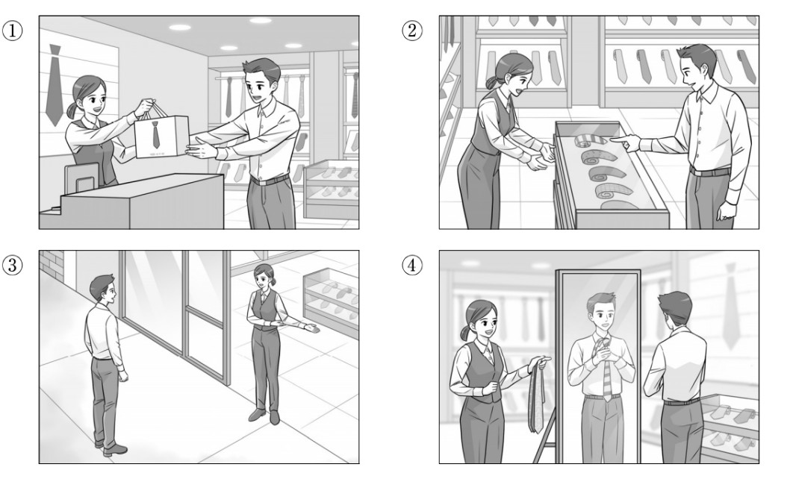
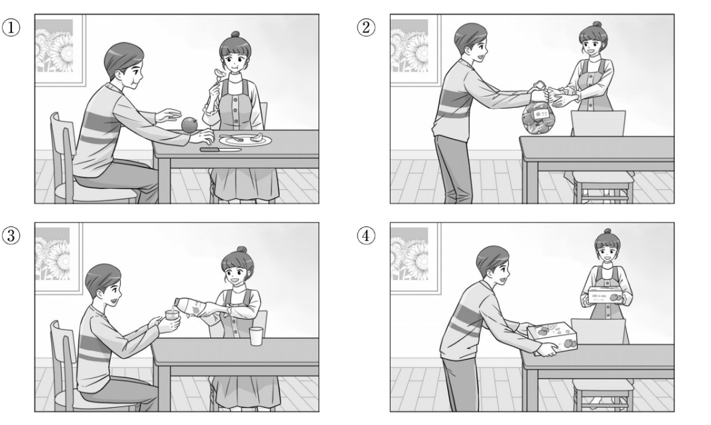
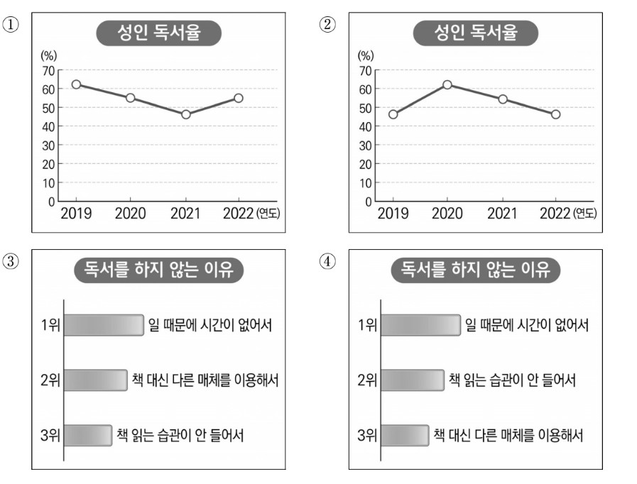

👨 남자: 제일 오른쪽에 있는 줄무늬 넥타이가 괜찮아 보이네요.
👩 여자: 그럼 이걸로 꺼내서 보여 드릴까요?
👨 Nam: Chiếc cà vạt kẻ sọc nằm ở ngoài cùng bên phải trông có vẻ khá ổn.
👩 Nữ: Vậy để tôi lấy chiếc này ra cho anh xem thử nhé?
🎯 Phân tích đáp án
Tại sao chọn ②? Bối cảnh hội thoại diễn ra tại một cửa hàng trang phục. Người nam đang quan sát và chỉ định "chiếc cà vạt kẻ sọc ở ngoài cùng bên phải" (제일 오른쪽에 있는 줄무늬 넥타이). Nhân viên nữ tiếp nhận thông tin và đề nghị "lấy ra cho xem" (꺼내서 보여 드릴까요), chứng tỏ sản phẩm đang được trưng bày bên trong tủ kính. Hình số 2 mô tả chính xác tình huống người nam chỉ tay vào tủ kính trưng bày và người nữ chuẩn bị thao tác mở tủ.
- Hình 1 sai vì mô tả cảnh nhân viên đang trao túi đồ cho khách hàng, đại diện cho việc giao dịch thanh toán đã hoàn tất.
- Hình 3 sai vì mô tả cảnh nhân viên đang đứng ở cửa đón khách vào không gian cửa tiệm.
- Hình 4 sai vì mô tả cảnh khách hàng đang trực tiếp ướm thử cà vạt lên cổ trước gương, không phù hợp với giai đoạn nhân viên đang lấy đồ từ trong tủ.

👩 여자: 그러네요. 하나 더 깎을까요?
👨 남자: 네, 좋아요. 수미 씨는 먹고 있어요. 제가 할게요.
👩 Nữ: Đúng vậy. Tôi gọt thêm một quả nữa nhé?
👨 Nam: Vâng, được đấy. Su-mi cứ tiếp tục dùng đi. Để tôi gọt cho.
🎯 Phân tích đáp án
Tại sao chọn ②? Trong đoạn hội thoại, hai người đang cùng nhau dùng trái cây. Khi người nữ ngỏ ý "gọt thêm một quả nữa" (하나 더 깎을까요?), người nam đã chủ động đảm nhận công việc này: "수미 씨는 먹고 있어요. 제가 할게요" (Su-mi cứ tiếp tục dùng đi, để tôi thực hiện cho). Điều này thiết lập bối cảnh hình ảnh: người nam đang vươn tay lấy dụng cụ hoặc quả táo để gọt, trong khi người nữ vẫn đang sử dụng dĩa để ăn. Hình 2 phản ánh chính xác phân bổ hành động này.
- Các bức tranh còn lại không tương thích với diễn biến hành động trọng tâm "người nam chủ động tiếp quản việc gọt táo" (제가 할게요) từ phía người nữ.

🎯 Phân tích đáp án
Tại sao chọn ③? Biểu đồ chính xác cần phải thỏa mãn đồng thời hai dữ kiện thống kê được đề cập trong bản tin:
1. Biểu đồ đường biểu diễn (Tỷ lệ đọc sách - 성인 독서율) phải thể hiện quỹ đạo đi xuống (계속 감소하고 - liên tục giảm sút).
2. Biểu đồ cột phân chia (Lý do không đọc sách) phải tuân thủ nghiêm ngặt trình tự tỷ lệ: Vị trí số 1 (가장 많았고) là '일 때문에 시간이 없어서' (Không có thời gian); Vị trí số 2 là '책 대신 다른 매체를 이용해서' (Dùng phương tiện khác); Vị trí số 3 là '책 읽는 습관이 안 들어서' (Chưa có thói quen).
Biểu đồ số 3 phản ánh chính xác tuyệt đối cả xu hướng giảm và trình tự sắp xếp các tỷ lệ nguyên nhân này.
- Các biểu đồ còn lại hiển thị sai lệch thông số, biểu hiện qua xu hướng đồ thị đường tăng lên (trái ngược với dữ kiện giảm sút) hoặc sắp xếp sai trật tự ưu tiên của các nhóm nguyên nhân trong biểu đồ cột.
👩 여자: 할머니 생신이라서 부모님하고 할머니 댁에 갔다 왔어.
👨 남자: _____________________________
👩 Nữ: Hôm qua là sinh nhật bà nội nên tớ đã cùng bố mẹ về thăm nhà bà.
👨 Nam: ( Vậy sao? Việc cậu không tham gia khiến tớ đã rất lo lắng. )
- ① Vậy sao? Việc cậu không tham gia khiến tớ đã rất lo lắng.
- ② Cậu đang theo học ở trung tâm nào vậy?
- ③ Vậy sao? Khi nào thì cậu dự định đến nhà bà?
- ④ Tại tớ đã lên kế hoạch đi cùng với bố mẹ.
🎯 Phân tích đáp án
Tại sao chọn ①? Người nam chủ động đặt câu hỏi về lý do vắng mặt của người nữ tại lớp học. Sau khi tiếp nhận thông tin lý do (về thăm nhà bà), phản hồi giao tiếp tiêu chuẩn và lịch sự nhất từ phía người nam là ghi nhận sự việc và bày tỏ sự quan tâm. Câu trả lời "그래? 안 나와서 걱정했어" (Vậy sao? Việc cậu không tham gia khiến tớ đã rất lo lắng) duy trì tính liên kết chặt chẽ và phù hợp nhất với bối cảnh hỏi thăm.
- ② Sai vì người nam ĐÃ NẮM RÕ THÔNG TIN người nữ học ở trung tâm yoga (chính anh là người đặt câu hỏi "sao hôm qua không đến lớp yoga"), việc hỏi lại địa điểm học là dư thừa và phi logic.
- ③ Sai vì hành động về thăm nhà bà của người nữ ĐÃ ĐƯỢC THỰC HIỆN HOÀN TẤT (갔다 왔어 - thì quá khứ). Do đó, việc đặt câu hỏi hướng tới tương lai "Khi nào cậu đi?" là sai lệch tiến trình thời gian.
- ④ Sai vì câu này sử dụng cấu trúc giải thích nguyên nhân (-거든). Trong ngữ cảnh này, người cung cấp lý do là người Nữ, việc người Nam đưa ra một nguyên nhân cá nhân là không phù hợp với chức năng phản hồi.
👨 남자: 저는 처음에 갔던 가게의 소파들이 제일 나은 것 같아요.
👩 여자: _____________________________
👨 Nam: Tôi nhận thấy sản phẩm tại cửa hàng đầu tiên chúng ta ghé thăm là ưu việt nhất.
👩 Nữ: ( Vậy thì chúng ta có nên quay lại địa điểm đó để xem xét thêm không? )
- ① Vậy thì chúng ta có nên quay lại địa điểm đó để xem xét thêm không?
- ② Chúng ta vẫn chỉ mới khảo sát được duy nhất một cửa hàng thôi mà.
- ③ Vậy thì quyết định mua chiếc sô-pha này anh thấy sao?
- ④ Tôi đã tiến hành mua hàng tại một cửa hàng sô-pha nằm gần nhà.
🎯 Phân tích đáp án
Tại sao chọn ①? Người nữ yêu cầu người nam đưa ra đánh giá tổng quan sau khi khảo sát nhiều cửa hàng. Người nam đưa ra kết luận ưu tiên dành cho cửa hàng "đầu tiên" (처음에 갔던 가게). Để thúc đẩy quá trình mua sắm đi đến quyết định, hành động đề xuất logic nhất từ phía người nữ là quay trở lại địa điểm được đánh giá cao đó. Lời đáp "그럼 거기로 다시 가 볼까요?" (Vậy chúng ta có nên quay lại địa điểm đó để xem xét thêm không?) duy trì tính nhất quán của cuộc đàm thoại.
- ② Sai vì mâu thuẫn với tiền đề người nữ đã đặt ra: "우리가 둘러본 가게들 중에" (Trong số NHỮNG CỬA HÀNG mà chúng ta đã xem - số nhiều), minh chứng cho việc họ đã khảo sát nhiều địa điểm, bác bỏ nhận định "mới xem một nơi" (한 곳밖에).
- ③ Sai vì sản phẩm được đánh giá cao nằm ở cửa hàng ĐẦU TIÊN. Do họ đang ở một địa điểm khác, không tồn tại đối tượng vật lý trực tiếp để sử dụng đại từ chỉ định "CÁI NÀY" (이 소파를) nhằm đưa ra lời đề nghị mua sắm.
- ④ Sai vì hai nhân vật HIỆN ĐANG TRONG QUÁ TRÌNH LỰA CHỌN, chưa đi đến quyết định giao dịch cuối cùng. Việc khẳng định "đã mua rồi" (샀어요) vi phạm tiến trình thời gian của sự việc.
👩 여자: 어쩌지? 벌써부터 너무 떨려서 아무 생각도 안 나.
👨 남자: _____________________________
👩 Nữ: Phải làm sao đây? Mới đó mà tớ đã vô cùng căng thẳng đến mức đầu óc trống rỗng chẳng tư duy được gì rồi.
👨 Nam: ( Cậu đã nỗ lực chuẩn bị rất kỹ lưỡng rồi nên chắc chắn sẽ hoàn thành xuất sắc thôi. )
- ① Cậu hãy xác nhận lại ngày phỏng vấn rồi thông báo cho tớ biết nhé.
- ② Cậu đã nỗ lực chuẩn bị rất kỹ lưỡng rồi nên chắc chắn sẽ hoàn thành xuất sắc thôi.
- ③ Chưa bước vào phỏng vấn mà cậu không hề căng thẳng chút nào, cậu thực sự xuất sắc đấy.
- ④ Bị đặt một câu hỏi nằm ngoài dự kiến chắc hẳn cậu đã vô cùng bất ngờ nhỉ.
🎯 Phân tích đáp án
Tại sao chọn ②? Người nữ đang đối mặt với sự bất ổn tâm lý nghiêm trọng trước thềm phỏng vấn (너무 떨려서 아무 생각도 안 나 - Căng thẳng không suy nghĩ được gì). Với tư cách là một người động viên, phản hồi mang tính xây dựng nhất từ người nam là đưa ra lời khuyên trấn an và khích lệ tinh thần. Câu đáp "준비 많이 했으니까 잘할 수 있을 거야" (Cậu đã chuẩn bị rất kỹ lưỡng rồi nên chắc chắn sẽ làm tốt thôi) đáp ứng trọn vẹn yêu cầu về giao tiếp khích lệ.
- ① Sai vì sự kiện phỏng vấn được xác định diễn ra NGAY TRONG HÔM NAY (오늘 면접 있지). Việc yêu cầu "xác nhận lại ngày tháng" (날짜를 다시 확인) là không phù hợp với tình huống cấp bách hiện tại.
- ③ Sai vì người nữ đang trực tiếp thừa nhận trạng thái CĂNG THẲNG TỘT ĐỘ (너무 떨려서). Lời khen "không hề căng thẳng" (안 떨린다니) là sự mâu thuẫn trực tiếp với thông tin được cung cấp.
- ④ Sai vì người nữ VẪN ĐANG TRONG GIAI ĐOẠN CHỜ (CHƯA VÀO PHÒNG PHỎNG VẤN). Việc giả định cô ấy "bị hỏi một câu hỏi khó dự tính" (질문을 받아서) vi phạm trình tự thời gian của sự kiện.
👩 여자: 그렇죠? 이 드라마 쓴 작가의 작품들은 다 재미있어요.
👨 남자: _____________________________
👩 Nữ: Đúng vậy chứ? Các tác phẩm do vị biên kịch của bộ phim này chắp bút thì tác phẩm nào cũng mang tính giải trí rất cao.
👨 Nam: ( Vậy sao? Sau khi hoàn thành bộ phim này, có lẽ tôi cũng nên tìm hiểu thêm các tác phẩm khác mới được. )
- ① Đúng vậy. Nội dung của tác phẩm phát hành trước đây chất lượng khá thấp.
- ② Vậy sao? Sau khi hoàn thành bộ phim này, có lẽ tôi cũng nên tìm hiểu thêm các tác phẩm khác mới được.
- ③ Đúng vậy. Bộ phim này dù có xem lại nhiều lần thì vẫn giữ được sự hấp dẫn.
- ④ Vậy sao? Tôi đã không hề biết đây là tác phẩm đầu tay của vị biên kịch này.
🎯 Phân tích đáp án
Tại sao chọn ②? Người nam bày tỏ sự khen ngợi đối với bộ phim đang xem. Người nữ tiếp nhận và bổ sung thông tin mang tính đánh giá cao năng lực của vị biên kịch: "Tác phẩm nào của người này cũng hấp dẫn (다 재미있어요)". Đứng trước một lời đề cử đầy thuyết phục như vậy, phản ứng logic và tích cực nhất của người nam là thể hiện sự mong muốn khám phá thêm. Câu trả lời "Đợi xem hết phim này tôi phải đi xem thêm các tác phẩm khác (다른 작품도 봐야겠어요)" hoàn thiện xuất sắc tiến trình giao tiếp.
- ① Sai vì người nữ vừa đưa ra lời khẳng định mang tính tuyệt đối "tác phẩm NÀO CŨNG HẤP DẪN (다 재미있어요)", việc người nam hạ thấp "tác phẩm trước chất lượng thấp" (별로였어요) là sự phủ nhận trực tiếp lập luận của người nữ.
- ③ Sai vì người nam đã cung cấp tiền đề ĐÂY LÀ LẦN ĐẦU TIÊN XEM (처음 보는데). Do đó, việc đưa ra đánh giá "xem lại nhiều lần vẫn hay" (몇 번을 다시 봐도) thiếu đi tính logic thực chứng.
- ④ Sai vì người nữ đề cập đến "các tác phẩm" (작품들은 다 - danh từ số nhiều), chỉ ra rằng vị biên kịch này đã có một gia tài sáng tác đáng kể. Điều này bác bỏ hoàn toàn giả thuyết đây là "tác phẩm đầu tay" (처음으로 쓴 작품).
👨 남자: 네. 제가 집에서 해 봤는데 안 지워지더라고요. 깨끗하게 될까요?
👩 여자: _____________________________
👨 Nam: Vâng. Ở nhà tôi đã thử tiến hành xử lý nhưng không thể làm sạch được. Liệu dịch vụ tại tiệm có thể xử lý sạch sẽ hoàn toàn được không thưa cô?
👩 Nữ: ( Vấn đề này thì phải tiến hành xử lý thực tế mới có thể kết luận được, nhưng tôi sẽ dốc sức để loại bỏ chúng một cách tối đa. )
- ① Có vẻ như các vết bẩn đã được loại bỏ đi một cách sạch sẽ rồi đấy ạ.
- ② Quý khách bảo quản giày cẩn thận nên trông tình trạng vẫn rất sạch sẽ.
- ③ Vấn đề này thì phải tiến hành xử lý thực tế mới có thể kết luận được, nhưng tôi sẽ dốc sức để loại bỏ chúng một cách tối đa.
- ④ Tôi dự định trở về nhà và tiến hành làm sạch lại thêm một lần nữa.
🎯 Phân tích đáp án
Tại sao chọn ③? Bối cảnh giao tiếp diễn ra giữa người nam (Khách hàng mang giày bẩn) và người nữ (Nhân viên dịch vụ giặt ủi). Đứng trước câu hỏi xác nhận hiệu quả làm sạch của khách hàng: "깨끗하게 될까요?" (Liệu có làm sạch được không?), phương thức phản hồi mang tính chuyên nghiệp và chuẩn mực nhất của một nhân viên dịch vụ là quản lý kỳ vọng của khách hàng đồng thời thể hiện tinh thần trách nhiệm. Câu "해 봐야 알겠지만 최대한 없애 볼게요" (Phải xử lý thực tế mới kết luận được, nhưng tôi sẽ dốc sức loại bỏ chúng tối đa) đáp ứng trọn vẹn yêu cầu khắt khe này.
- ① Sai vì sản phẩm giày CHỈ VỪA MỚI ĐƯỢC TIẾP NHẬN tại tiệm, quy trình xử lý làm sạch chưa được khởi động nên không thể đưa ra đánh giá "vết bẩn đã được loại bỏ" (지워진 것 같아요).
- ② Sai vì tình trạng đôi giày đã được nhân viên xác nhận là TỒN TẠI RẤT NHIỀU VẾT Ố BẨN (얼룩이 많네요). Việc đưa ra lời khen ngợi "giày sạch sẽ" (깨끗하게 신으셨네요) trong hoàn cảnh này là phi thực tế và thiếu chuẩn mực giao tiếp.
- ④ Sai vì người Nữ đang đảm nhiệm vai trò NHÂN VIÊN CUNG CẤP DỊCH VỤ. Quá trình xử lý sẽ được tiến hành bằng trang thiết bị chuyên dụng tại cơ sở kinh doanh, hoàn toàn không có lý do để nhân viên mang tài sản của khách hàng "về tư gia" (집에 돌아가서) để tự xử lý.
👨 남자: 그러네. 저 카페에서 커피 한잔 마시자.
👩 여자: 응. 난 기차에서 먹을 김밥 좀 사서 갈 테니까 먼저 들어가 있어.
👨 남자: 알았어. 카페에 앉아 있을게.
👨 Nam: Đúng vậy. Chúng ta hãy vào quán cà phê đằng kia sử dụng đồ uống nhé.
👩 Nữ: Đồng ý. Tôi sẽ đi mua một chút kimbap để dự trữ trên tàu, anh hãy tiến vào quán trước đi nhé.
👨 Nam: Tôi nắm rõ rồi. Tôi sẽ tìm chỗ ngồi trong quán cà phê và đợi cô.
- ① Tiến hành mua kimbap.
- ② Lên tàu hỏa.
- ③ Ngồi vào vị trí.
- ④ Di chuyển vào bên trong quán cà phê.
🎯 Phân tích đáp án
Tại sao chọn ①? Yêu cầu của bài toán là xác định "Hành động TIẾP THEO của người nữ". Thông qua lời thoại trình bày kế hoạch cá nhân: "난 기차에서 먹을 김밥 좀 사서 갈 테니까 먼저 들어가 있어" (Tôi sẽ đi mua một chút kimbap rồi vào sau, anh cứ vào quán trước đi), người nữ đã xác định rõ nhiệm vụ lập tức phải thực hiện của mình. Ngay khi kết thúc cuộc trao đổi, cô ấy sẽ thực thi hành động Mua kimbap (김밥을 산다). Do đó, đáp án ① là sự lựa chọn duy nhất đúng.
- ② Sai vì cả hai đã xác nhận quỹ thời gian vẫn còn dư dả (시간이 남았네), thời điểm thực hiện thao tác "lên tàu" (기차를 탄다) chưa tới.
- ③, ④ Sai vì các hành vi "di chuyển vào quán cà phê" (카페로 들어간다) và "ngồi vào vị trí" (자리에 앉는다) là những thao tác được NGƯỜI NAM đảm nhận trước (먼저 들어가 있어). Người nữ chỉ thực hiện các hành động này sau khi hoàn tất việc mua thực phẩm.
👨 남자: 네. 차 열쇠 주시고 고객 대기실에서 잠깐 기다려 주세요.
👩 여자: 열쇠는 차 안에 두었어요. 대기실은 이쪽으로 가면 되나요?
👨 남자: 네. 자동차 상태 확인하고 말씀드리겠습니다.
👨 Nam: Vâng. Quý khách vui lòng bàn giao lại chìa khóa xe và di chuyển sang phòng chờ dành cho khách hàng để đợi trong giây lát.
👩 Nữ: Chìa khóa tôi đã lưu trữ sẵn ở bên trong xe rồi ạ. Cho tôi hỏi, để đến phòng chờ tôi di chuyển theo hướng này là chính xác đúng không ạ?
👨 Nam: Vâng thưa quý khách. Bộ phận kỹ thuật sẽ tiến hành kiểm tra trạng thái xe và cung cấp thông tin phản hồi lại sau.
- ① Di chuyển đến khu vực phòng chờ dành cho khách hàng.
- ② Tiến hành bàn giao chìa khóa xe cho người nam.
- ③ Thực hiện nghiệp vụ kiểm tra tình trạng của chiếc xe ô tô.
- ④ Thực hiện thủ tục đặt lịch hẹn để sửa xe.
🎯 Phân tích đáp án
Tại sao chọn ①? Câu hỏi yêu cầu truy xuất "Hành động TIẾP THEO của người nữ". Để phản hồi yêu cầu chờ đợi của nhân viên, người nữ đã chủ động xác minh lộ trình di chuyển: "대기실은 이쪽으로 가면 되나요?" (Phòng chờ tôi đi theo hướng này là được đúng không?). Ngay sau khi người nam xác nhận "Vâng", hành động mang tính vật lý tiếp theo mà người nữ bắt buộc phải thực hiện là Di chuyển đến phòng chờ khách hàng (고객 대기실로 간다). Đáp án ① tuân thủ hoàn hảo logic diễn biến sự kiện.
- ② Sai vì chìa khóa đã ĐƯỢC BỐ TRÍ SẴN BÊN TRONG XE (차 안에 두었어요). Người nữ không cần thực hiện thêm thao tác vật lý nào để "Bàn giao chìa khóa" (열쇠를 준다) cho người nam.
- ③ Sai vì thao tác "Kiểm tra tình trạng xe" (상태 확인하고) là quy trình nghiệp vụ thuộc thẩm quyền của NGƯỜI NAM (Nhân viên kỹ thuật), hoàn toàn nằm ngoài phạm vi can thiệp của người Nữ (Khách hàng).
- ④ Sai vì người nữ ĐÃ HOÀN TẤT THỦ TỤC ĐẶT LỊCH HẸN TRƯỚC ĐÓ (예약했어요). Việc thực hiện lại thao tác này là dư thừa và sai quy trình.
👩 여자: 물감을 사야 하는데 찾는 게 안 보이네요.
👨 남자: 제품 이름 알려 줘요. 직원한테 그 제품이 있는지 물어볼게요.
👩 여자: 아니에요. 제가 물어보고 올 테니까 민수 씨는 여기에서 기다려요.
👩 Nữ: Tôi cần mua màu nước nhưng không thấy sản phẩm ở đâu cả.
👨 Nam: Xin hãy cho tôi biết tên sản phẩm. Tôi sẽ hỏi nhân viên xem họ có mặt hàng đó không.
👩 Nữ: Không cần đâu. Tôi sẽ tự đi hỏi, anh Min-su cứ đợi ở đây nhé.
- ① Tiến hành tìm kiếm màu nước.
- ② Lựa chọn bút chì vẽ mỹ thuật.
- ③ Đặt câu hỏi cho nhân viên cửa hàng.
- ④ Cung cấp tên sản phẩm cho người nam.
🎯 Phân tích đáp án
Tại sao chọn ③? Dạng câu hỏi yêu cầu xác định "Hành động tiếp theo của người Nữ". Người nữ từ chối lời đề nghị giúp đỡ của người nam và cho biết bản thân sẽ đích thân đi hỏi nhân viên: "아니에요. 제가 물어보고 올 테니까" (Không cần đâu, tôi sẽ đi hỏi rồi quay lại). Do đó, hành động ngay lập tức tiếp theo mà cô sẽ thực hiện là Hỏi nhân viên (직원에게 물어본다). Đáp án ③ là chính xác.
- ① Sai vì người nữ đã tiến hành tìm kiếm nhưng KHÔNG NHÌN THẤY (찾는 게 안 보이네요), do đó cô mới chuyển sang phương án nhờ sự trợ giúp từ nhân viên thay vì tiếp tục tự tìm.
- ② Sai vì bút chì mỹ thuật là vật phẩm mà NGƯỜI NAM ĐÃ LỰA CHỌN XONG (미술 연필은 골랐어요).
- ④ Sai vì người nữ đã từ chối sự hỗ trợ (아니에요), cô sẽ tự mang thông tin đi hỏi chứ không "cung cấp tên sản phẩm cho người nam" (남자에게 이름 말한다).
👨 남자: 네. 지금 무대 앞으로 공연팀들을 데리고 와 줄래요? 연습 전에 진행 순서 설명하게요.
👩 여자: 알겠습니다. 촬영팀한테 연습 시작할 거라고 연락할까요?
👨 남자: 그건 제가 할게요. 얼른 다녀오세요.
👨 Nam: Vâng. Cô vui lòng dẫn đội biểu diễn ra phía trước sân khấu giúp tôi được không? Tôi cần giải thích về trình tự tiến hành trước khi bắt đầu diễn tập.
👩 Nữ: Tôi hiểu rồi. Vậy tôi có nên liên lạc thông báo cho đội quay phim về việc bắt đầu diễn tập không?
👨 Nam: Việc đó tôi sẽ phụ trách. Cô hãy khẩn trương thực hiện công việc đi.
- ① Tiến hành liên lạc cho đội quay phim.
- ② Giải thích về trình tự tiến hành chương trình.
- ③ Rà soát và kiểm tra lại sân khấu biểu diễn.
- ④ Di chuyển đi đón đội biểu diễn tới.
🎯 Phân tích đáp án
Tại sao chọn ④? Câu hỏi yêu cầu xác định "Hành động tiếp theo của người Nữ". Người nam giao nhiệm vụ cho người nữ dẫn đội biểu diễn tới: "공연팀들을 데리고 와 줄래요?", đồng thời tự mình đảm nhận việc liên lạc với đội quay phim ("그건 제가 할게요"). Do đó, người nữ chỉ còn một nhiệm vụ duy nhất là thực hiện hành vi "Đi đón đội biểu diễn" (공연팀을 데리러 간다). Đáp án ④ là chính xác.
- ① Sai vì nhiệm vụ liên lạc cho đội quay phim đã được NGƯỜI NAM chủ động đảm nhận (그건 제가 할게요).
- ② Sai vì người chịu trách nhiệm "giải thích trình tự tiến hành" (진행 순서 설명하게요) cho đội biểu diễn là NGƯỜI NAM.
- ③ Sai vì công tác "kiểm tra sân khấu" ĐÃ ĐƯỢC HOÀN TẤT (무대 점검 끝났습니다) ngay từ câu mở lời của người nữ.
👨 남자: 응. 내가 알던 곳이 아닌 것 같아. 길도 넓어지고 가게도 많아지고.
👩 여자: 그러네. 어, 그런데 저기 인주서점은 아직도 그대로 있어.
👨 남자: 정말이네. 우리 대학 다닐 때 전공 책 사러 자주 갔었잖아.
👨 Nam: Đúng vậy. Dường như không còn nhận ra nơi chốn quen thuộc nữa. Đường sá được mở rộng và các cửa hàng cũng mọc lên nhiều hơn.
👩 Nữ: Quả thực là vậy. Ồ, nhưng nhà sách Inju đằng kia vẫn còn nguyên vẹn như xưa.
👨 Nam: Đúng thật. Đó là nơi chúng ta thường xuyên lui tới để mua sách chuyên ngành thời đại học mà.
- ① Hệ thống đường sá đã trở nên chật hẹp hơn so với trước đây.
- ② Đây là lần đầu tiên người nữ đặt chân đến địa điểm này.
- ③ Người nam chưa từng có trải nghiệm đến nhà sách Inju.
- ④ Cho đến hiện tại, nhà sách Inju vẫn tọa lạc ở vị trí cũ.
🎯 Phân tích đáp án
Tại sao chọn ④? Câu hỏi yêu cầu tìm chi tiết đúng với nội dung đoạn hội thoại. Người nữ nhận thấy sự thay đổi của cảnh quan xung quanh nhưng đặc biệt nhấn mạnh về nhà sách Inju: "인주서점은 아직도 그대로 있어" (Nhà sách Inju vẫn còn y như cũ kìa). Việc một nhà sách sau 10 năm vẫn duy trì hiện trạng "y như cũ" đồng nghĩa với việc "nó vẫn tọa lạc ở vị trí cũ cho tới tận bây giờ" (지금까지 같은 자리에 있다). Nhận định ④ là hoàn toàn chính xác.
- ① Sai vì cơ sở hạ tầng đường sá đã được MỞ RỘNG HƠN (길도 넓어지고), không phải là "chật hẹp đi" (좁아졌다).
- ② Sai vì người nữ phát biểu "10 năm rồi mới QUAY LẠI ĐÂY (10년 만에 와 보니까)", minh chứng cho việc 10 năm trước cô đã từng hiện diện ở đây, không phải "lần đầu tiên tới" (처음 와 봤다).
- ③ Sai vì thời đại học, cả nam và nữ đều THƯỜNG XUYÊN ĐẾN ĐÂY (자주 갔었잖아) để mua sách, bác bỏ hoàn toàn nhận định "chưa từng đến bao giờ" (간 적이 없다).
- ① Vật phẩm thất lạc đã được tìm thấy tại gian hàng giày dép.
- ② Chiếc ví được phát hiện vào lúc 8 giờ tối.
- ③ Trung tâm dịch vụ khách hàng nằm kế bên gian hàng giày dép.
- ④ Người đánh mất ví chỉ cần di chuyển xuống tầng 1.
🎯 Phân tích đáp án
Tại sao chọn ①? Câu hỏi yêu cầu tìm chi tiết đúng với thông báo. Loa phát thanh cung cấp thông tin rõ ràng về địa điểm phát hiện chiếc ví thất lạc: "지갑은 조금 전에 1층 구두 매장에서 발견되었습니다" (Chiếc ví vừa được tìm thấy tại gian hàng giày dép ở tầng 1). Chiếc ví bị mất chính là vật phẩm thất lạc (분실물). Việc nó được tìm thấy ở gian hàng giày chứng tỏ "Vật phẩm thất lạc này đã nằm ở gian hàng giày dép" (분실물은 구두 매장에 있었다). Đáp án ① là sự thật được khẳng định trong bài.
- ② Sai vì mốc thời gian nhặt được ví là "Cách đây ít phút (조금 전에)". Thời điểm 8 giờ tối (여덟 시) là THỜI GIAN TRUNG TÂM THƯƠNG MẠI ĐÓNG CỬA (백화점이 문을 닫으니). Đây là một bẫy thông tin cơ bản.
- ③ Sai vì gian hàng giày dép tọa lạc ở Tầng 1 (1층), trong khi Trung tâm Dịch vụ Khách hàng được đặt ở Tầng 5 (5층). Hai địa điểm này không hề nằm "cạnh nhau" (옆에).
- ④ Sai vì loa phát thanh hướng dẫn người mất ví hãy di chuyển lên Tầng 5 (5층에 있는 고객 센터로) để nhận lại đồ, chứ không phải đi "xuống tầng 1" (1층으로 가면 된다).
- ① Vụ tai nạn này phát sinh vào đêm hôm qua.
- ② Hậu quả của vụ tai nạn là có nhiều người bị thương nặng.
- ③ Cơ quan cảnh sát đang tiến hành điều tra làm rõ nguyên nhân sự cố.
- ④ Đây là một sự cố đụng độ giữa chiếc tàu cá và một con tàu khác.
🎯 Phân tích đáp án
Tại sao chọn ③? Yêu cầu tìm thông tin chính xác. Bản tin kết luận quá trình xử lý sự cố: "현재 경찰은... 정확한 사고 원인을 파악하고 있습니다" (Hiện tại cảnh sát đang tiến hành nắm bắt nguyên nhân chính xác của vụ tai nạn). Quá trình "nắm bắt/tìm hiểu" (파악하다) mang ý nghĩa tương đương với hoạt động chuyên môn "điều tra" (조사하다). Do đó, nhận định "Cảnh sát đang điều tra về nguyên nhân sự cố" (경찰은 사고 원인에 대해 조사하고 있다) là sự chuyển đổi từ vựng chính xác. Đáp án ③ là lựa chọn đúng.
- ① Sai vì sự cố được xác định xảy ra vào thời điểm 4 GIỜ RẠNG SÁNG HÔM NAY (오늘 새벽 네 시경), không phải là "đêm hôm qua" (어젯밤).
- ② Sai vì bản tin khẳng định một cách tích cực rằng HOÀN TOÀN KHÔNG CÓ THƯƠNG VONG (다친 사람은 없었습니다), bác bỏ lập luận "nhiều người bị thương nặng" (크게 다쳤다).
- ④ Sai vì chiếc tàu cá này đã mất lái và va đập vào BÃI ĐÁ NGẦM (바위에 부딪치는), chứ không hề có sự đụng độ với "một con tàu khác" (다른 배와 충돌하는) như đáp án đưa ra.
👩 여자: 저는 동물 병원에서 아픈 동물을 돌보는 일을 하는데요. 동물의 상태도 살피고 수의사의 처방에 따라 약도 줍니다. 또 수의사가 진찰을 하거나 수술할 때 옆에서 돕는 일도 하죠. 그리고 보호자가 동물을 집에서 돌볼 때 주의할 사항을 알려 드리기도 합니다.
👩 Nữ: Tôi làm việc tại bệnh viện thú y, phụ trách việc chăm sóc các loài động vật bị bệnh. Nhiệm vụ của tôi bao gồm theo dõi tình trạng của động vật và cấp thuốc theo chỉ định của bác sĩ thú y. Đồng thời, tôi cũng hỗ trợ bác sĩ trong các quá trình thăm khám hoặc phẫu thuật. Ngoài ra, tôi còn có trách nhiệm hướng dẫn chủ nuôi về những điểm cần lưu ý khi chăm sóc động vật tại nhà.
- ① Người nữ có tham gia vào quá trình phẫu thuật.
- ② Người nữ đảm nhận việc chăm sóc động vật tại nhà của chủ nuôi.
- ③ Nghề nghiệp của người nữ được công chúng biết đến rộng rãi.
- ④ Việc quan sát và theo dõi tình trạng của động vật không thuộc phạm vi nghiệp vụ của người nữ.
🎯 Phân tích đáp án
Tại sao chọn ①? Yêu cầu tìm nội dung đúng với bài nghe. Người nữ miêu tả các khía cạnh công việc của mình, trong đó có nhấn mạnh chi tiết: "수의사가 진찰을 하거나 수술할 때 옆에서 돕는 일도 하죠" (Khi bác sĩ thăm khám hoặc phẫu thuật, tôi cũng thực hiện công việc hỗ trợ bên cạnh). Hành động đứng phụ tá trong phòng mổ chính là sự "Tham gia vào quá trình phẫu thuật" (수술 과정에 참여한다). Đáp án ① phản ánh chính xác thực tế công việc này.
- ② Sai vì người nữ khẳng định nơi làm việc của cô là TẠI BỆNH VIỆN (동물 병원에서). Cô chỉ cung cấp thông tin hướng dẫn để chủ nuôi tự chăm sóc ở nhà, chứ không cung cấp dịch vụ "chăm sóc tại nhà" (집에서 동물을 돌본다).
- ③ Sai vì ngay phần đặt vấn đề, người phỏng vấn đã khẳng định: "직업을 모르는 분들이 많은데요" (Có RẤT NHIỀU NGƯỜI KHÔNG BIẾT đến nghề nghiệp này). Ngành nghề này chưa đạt được độ "phổ biến rộng rãi" (잘 알려져 있다).
- ④ Sai vì người nữ khẳng định trách nhiệm của mình: "동물의 상태도 살피고" (Tôi cũng phải theo dõi tình trạng của động vật). Hành vi "Theo dõi" (살피다) mang ý nghĩa tương đương "Quan sát" (관찰하다), do đó đây LÀ một phần nghiệp vụ thiết yếu của cô, trái ngược hoàn toàn với nhận định "không phải nhiệm vụ" (업무가 아니다).
👩 여자: 그냥 집에 가서 먹어요. 식사 준비하는 데 얼마 안 걸리잖아요.
👨 남자: 피곤해서 집에 갈 힘도 없어요. 이럴 땐 그냥 밖에서 사 먹어요.
👩 Nữ: Chúng ta cứ về nhà dùng bữa đi. Việc chuẩn bị bữa ăn cũng không mất quá nhiều thời gian mà.
👨 Nam: Do quá mệt nên tôi không còn đủ sức để đi về nhà nữa. Trong những hoàn cảnh như thế này, tốt nhất là chúng ta nên mua đồ ăn ở ngoài.
- ① Chúng ta cần phải thiết lập kế hoạch chuẩn bị bữa tối từ trước.
- ② Việc tiêu thụ một lượng lớn thức ăn cùng một lúc là thói quen không tốt.
- ③ Nhằm bảo vệ sức khỏe, chúng ta phải duy trì chế độ ăn uống một cách có quy tắc.
- ④ Trong trạng thái cơ thể mệt mỏi, việc lựa chọn dùng bữa tối bên ngoài là phương án tối ưu.
🎯 Phân tích đáp án
Tại sao chọn ④? Đề bài yêu cầu xác định "Suy nghĩ trọng tâm của người Nam". Ngay từ đầu, người nam đã kiên quyết đề xuất phương án "Dùng bữa bên ngoài vì trạng thái mệt mỏi". Mặc cho người nữ thuyết phục về nhà nấu nướng để tiết kiệm, người nam vẫn bảo vệ vững chắc lập trường ở câu chốt: "피곤해서... 이럴 땐 그냥 밖에서 사 먹어요" (Vì mệt mỏi... những lúc thế này cứ mua đồ ăn ở ngoài). Lập luận này thể hiện rõ triết lý: "Khi cơ thể suy nhược mệt mỏi, nên ưu tiên dùng bữa ở bên ngoài" (피곤할 때는 저녁을 밖에서 사 먹는 것이 좋다). Đáp án ④ tổng hợp chính xác hệ tư tưởng này.
- Các đáp án ①, ②, ③ đề cập đến những lời khuyên sức khỏe mang tính giáo điều ("chuẩn bị trước bữa ăn", "không ăn quá no", "ăn uống điều độ"). Đây là những nội dung lạc đề hoàn toàn so với trọng tâm cuộc tranh luận "dùng bữa tại nhà hay ăn ngoài" của hai nhân vật.
👩 여자: 정말? 근데 그럴 때는 혼자 있게 해 주는 게 좋지 않을까?
👨 남자: 지금이 바로 우리가 같이 있어 줘야 할 때지. 그것만으로도 큰 힘이 될 거야.
👩 Nữ: Vậy sao? Tuy nhiên, đối với những chấn thương tâm lý như vậy, chẳng phải việc để cậu ấy có không gian riêng tĩnh lặng một mình sẽ tốt hơn sao?
👨 Nam: Hiện tại chính là thời điểm cậu ấy cần chúng ta kề cạnh nhất. Chỉ riêng sự hiện diện của chúng ta cũng đủ trở thành một nguồn động lực to lớn cho cậu ấy rồi.
- ① Khi bạn bè rơi vào hoàn cảnh khó khăn, chúng ta cần phải ở bên cạnh đồng hành cùng họ.
- ② Việc nỗ lực để duy trì mối quan hệ hòa hảo với nhiều người là điều vô cùng cần thiết.
- ③ Khi giao tiếp với người khác, chúng ta cần phải thể hiện sự cẩn trọng trong ngôn từ.
- ④ Khi phát sinh bất đồng với bạn bè, việc tìm ra hướng giải quyết nhanh chóng là phương án tối ưu.
🎯 Phân tích đáp án
Tại sao chọn ①? Yêu cầu xác định "Suy nghĩ trọng tâm của người Nam". Cuộc đàm thoại thể hiện hai góc nhìn đối lập về phương pháp hỗ trợ một người bạn đang chịu tổn thương tâm lý. Phản bác lại quan điểm "Nên để bạn một mình" của người Nữ, người Nam đã khẳng định mạnh mẽ: "지금이 바로 우리가 같이 있어 줘야 할 때지" (Hiện tại chính là lúc chúng ta cần phải ở bên cạnh cậu ấy). Triết lý về sự đồng hành này đồng nhất hoàn toàn với nhận định: "Khi bạn bè gặp khó khăn, cần phải kề cạnh hỗ trợ" (친구가 힘들 때는 옆에 있어 줘야 한다). Đáp án ① là kết luận chính xác.
- Các đáp án ②, ③, ④ cung cấp những châm ngôn kỹ năng sống mang tính lý thuyết chung chung (cần hòa đồng, cần cẩn trọng ngôn từ, cần xử lý mâu thuẫn nhanh chóng). Những nội dung này hoàn toàn lạc đề và không có sợi dây liên kết nào với chủ đề "Phương pháp an ủi một người bạn đang thất tình" được đề cập trong bài.
👨 남자: 일정이 너무 많아요. 전 좀 여유롭게 여행하고 싶어요.
👩 여자: 모처럼 여행 왔는데 뭐든 많이 하면 좋잖아요.
👨 남자: 그래도 시간을 갖고 천천히 보면 좋겠어요. 일정을 좀 줄이죠.
👨 Nam: Mật độ hoạt động như vậy là quá sức. Tôi mong muốn có một chuyến du lịch với nhịp độ thong thả và nhàn nhã hơn.
👩 Nữ: Hiếm khi mới có cơ hội đi du lịch, việc tối đa hóa các trải nghiệm thì càng mang lại giá trị cao chứ sao.
👨 Nam: Mặc dù vậy, tôi vẫn ưu tiên việc dành đủ thời gian để từ từ chiêm ngưỡng cảnh vật hơn. Chúng ta nên cân nhắc cắt giảm bớt lịch trình.
- ① Du lịch là hoạt động nên được tiến hành một cách thong thả và nhàn nhã.
- ② Việc tổ chức đi du lịch với tần suất quá thường xuyên là một thói quen không tốt.
- ③ Trong các chuyến du lịch, chúng ta cần tích cực tham gia vào nhiều trải nghiệm đa dạng.
- ④ Thiết lập sẵn nguồn ngân sách dự kiến là thao tác cần thiết trước mỗi chuyến du lịch.
🎯 Phân tích đáp án
Tại sao chọn ①? Yêu cầu tìm "Suy nghĩ trọng tâm của người Nam". Cuộc tranh luận phản ánh hai khuynh hướng du lịch đối lập. Trong khi người nữ ủng hộ việc chèn ép lịch trình để tối đa hóa trải nghiệm, người nam lại bác bỏ quan điểm này: "전 좀 여유롭게 여행하고 싶어요... 천천히 보면 좋겠어요" (Tôi muốn du lịch một cách thong thả... được chậm rãi ngắm nhìn). Lập trường coi trọng sự thư giãn trong chuyến đi của Nam hoàn toàn trùng khớp với định hướng: "Việc đi du lịch một cách nhàn nhã, thong thả là điều tốt" (여행은 여유롭게 하는 것이 좋다). Đáp án ① là kết luận chính xác.
- ② Sai vì đoạn hội thoại không hề cung cấp bất kỳ dữ kiện nào liên quan đến tần suất (자주 가는 것) hay số lần thực hiện các chuyến du lịch.
- ③ Sai vì tư tưởng "Tối đa hóa các trải nghiệm đa dạng" (뭐든 많이 하면 좋잖아요) là quan điểm bảo vệ lịch trình dày đặc của NGƯỜI NỮ, hoàn toàn trái ngược với nguyện vọng cắt giảm lịch trình của người Nam.
- ④ Sai vì mâu thuẫn giữa hai nhân vật xoay quanh bài toán LỊCH TRÌNH THỜI GIAN (일정), tuyệt đối không có sự xuất hiện của bất kỳ yếu tố TÀI CHÍNH (예산 - ngân sách) nào trong cuộc thảo luận.
👨 남자: 대부분의 광고는 제품의 장점을 드러내는 데 집중하는데요. 저는 호기심을 자극하는 것에 중점을 둡니다. 그러기 위해 사람들이 지금 보고 있는 게 무엇을 광고하는 것인지 끝까지 봐야 알 수 있도록 숨기는 거죠. 이렇게 대중의 궁금증을 유발하는 겁니다.
👨 Nam: Đại đa số các phim quảng cáo hiện nay đều tập trung vào việc phô bày những điểm mạnh ưu việt của sản phẩm. Tuy nhiên, cá nhân tôi lại đặt trọng tâm vào việc kích thích sự tò mò của công chúng. Để đạt được mục đích đó, tôi cố tình che giấu thông tin, buộc khán giả phải theo dõi đến tận giây phút cuối cùng mới có thể nhận ra đối tượng được quảng cáo là gì. Đây là phương thức chiến lược nhằm khơi gợi sự hiếu kỳ của đại chúng.
- ① Việc sản xuất ra những đoạn phim quảng cáo với thời lượng ngắn sẽ mang lại hiệu suất truyền thông cao hơn.
- ② Một tác phẩm quảng cáo thành công là phải biết cách kích thích sự tò mò của công chúng.
- ③ Một tác phẩm quảng cáo phải gánh vác trách nhiệm truyền đạt thông tin sản phẩm một cách chân thực nhất.
- ④ Một tác phẩm quảng cáo phải được thiết kế sao cho khán giả có thể dễ dàng nắm bắt nội dung cốt lõi.
🎯 Phân tích đáp án
Tại sao chọn ②? Yêu cầu xác định "Suy nghĩ trọng tâm của người Nam". Vị đạo diễn trực tiếp khẳng định nguyên tắc bất di bất dịch trong triết lý sản xuất quảng cáo của mình: "저는 호기심을 자극하는 것에 중점을 둡니다" (Tôi đặt trọng tâm vào việc kích thích sự tò mò). Toàn bộ phương pháp che giấu thông tin phía sau đều nhằm phục vụ cho mục đích duy nhất này. Lập luận đó tương ứng hoàn hảo với nguyên tắc: "Quảng cáo cần phải kích thích sự tò mò của đại chúng" (광고는 대중의 호기심을 자극해야 한다). Đáp án ② truyền tải trọn vẹn tư tưởng nghệ thuật của nhân vật.
- ① Sai vì vị đạo diễn hoàn toàn không đề cập đến yếu tố "thời lượng ngắn" (짧게) trong tiêu chuẩn đánh giá chất lượng quảng cáo.
- ③ Sai vì mô hình "truyền đạt thông tin ưu điểm" là phương thức sản xuất đại trà của "người khác", trong khi triết lý của vị đạo diễn là SỰ CHE GIẤU (숨기는 거죠) để thách thức sự tò mò, thay vì "phơi bày sự thật rõ ràng" (사실대로 전달) ngay từ đầu.
- ④ Sai vì phương pháp đạo diễn áp dụng là cố tình TẠO RA SỰ KHÓ HIỂU, bắt buộc người xem phải đầu tư thời gian theo dõi đến cuối cùng (끝까지 봐야 알 수 있도록). Triết lý này đối nghịch hoàn toàn với tiêu chí "giúp khán giả dễ dàng nắm bắt" (쉽게 이해할 수 있어야).
👨 남자: 그건 참석자들에게 미리 이메일로 보내죠. 회의 때마다 낭비되는 종이가 너무 많은 것 같아요.
👩 여자: 네, 바로 보내겠습니다. 지난번 회의처럼 대형 화면을 사용하실 거지요?
👨 남자: 네. 그리고 앞으로는 발표 자료도 필요한 경우에만 복사하죠. 어차피 회의는 화면을 보면서 하는데 굳이 종이를 사용할 필요 없잖아요.
👨 Nam: Những tài liệu tham khảo đó cô hãy gửi trước qua email cho những người tham dự. Tôi nhận thấy dạo gần đây lượng giấy in bị lãng phí trong mỗi cuộc họp là quá lớn.
👩 Nữ: Vâng, tôi sẽ tiến hành gửi email ngay. Lần này chúng ta vẫn sẽ tiếp tục sử dụng màn hình lớn giống như cuộc họp lần trước đúng không ạ?
👨 Nam: Đúng vậy. Thêm vào đó, từ nay về sau đối với các tài liệu thuyết trình, chúng ta cũng chỉ tiến hành in ấn khi thực sự cần thiết. Đằng nào thì trong quá trình họp mọi người cũng đều theo dõi nội dung trên màn hình, do đó không cần thiết phải sử dụng giấy in làm gì.
- ① Cần thiết phải ghi chép lại toàn bộ nội dung của cuộc họp một cách đầy đủ.
- ② Cần phải cắt giảm lượng giấy in bị lãng phí trong các cuộc họp.
- ③ Cần phải thay đổi phòng họp sang một địa điểm có không gian rộng rãi hơn.
- ④ Tài liệu thuyết trình nên được thiết kế sao cho người xem dễ dàng nắm bắt.
🎯 Phân tích đáp án
Tại sao chọn ②? Yêu cầu của câu hỏi là xác định "Suy nghĩ trọng tâm của người Nam". Xuyên suốt cuộc hội thoại, người nam liên tục thể hiện sự quan ngại về vấn đề tiêu thụ giấy: "회의 때마다 낭비되는 종이가 너무 많은 것 같아요" (Lượng giấy bị lãng phí trong mỗi cuộc họp là quá lớn). Từ nhận định đó, ông đưa ra chỉ thị gửi tài liệu qua email thay vì in ấn, đồng thời kết luận: "굳이 종이를 사용할 필요 없잖아요" (Không cần thiết phải sử dụng giấy). Lập luận này tương ứng trực tiếp với nội dung: "Cần cắt giảm lượng giấy bị lãng phí trong các cuộc họp (회의 때 낭비되는 종이를 줄이는 것이 좋다)". Đáp án ② là sự tóm lược hoàn hảo nhất.
- ① Sai vì vấn đề "ghi chép biên bản cuộc họp" (기록해야 한다) hoàn toàn không được đề cập đến trong nội dung hội thoại.
- ③ Sai vì người nam chỉ chỉ đạo sử dụng "màn hình lớn" (대형 화면) để trình chiếu, không hề yêu cầu phải "đổi sang phòng họp lớn hơn" (더 큰 장소로 바꿔야 한다).
- ④ Sai vì người nam yêu cầu cắt giảm việc in tài liệu, không đưa ra bất kỳ bình luận hay chỉ thị nào liên quan đến hình thức thiết kế "dễ hiểu" (알아보기 쉽게) của tài liệu thuyết trình.
- ① Cuộc họp lần này sẽ được tiến hành mà không có tài liệu thuyết trình.
- ② Người nữ dự định sẽ đi photocopy các tài liệu sử dụng trong cuộc họp.
- ③ Người nam đã từng sử dụng màn hình lớn trong các cuộc họp trước đây.
- ④ Người nữ đã hoàn tất việc gửi tài liệu tham khảo cho người tham dự qua email.
🎯 Phân tích đáp án
Tại sao chọn ③? Yêu cầu tìm chi tiết đúng với thông tin bài nghe. Người nữ đặt câu hỏi xác nhận: "지난번 회의처럼 대형 화면을 사용하실 거지요?" (Anh sẽ sử dụng màn hình lớn giống như cuộc họp lần trước đúng không?). Câu nói này xác nhận một sự thật khách quan rằng: Ở cuộc họp trước, người nam đã có kinh nghiệm sử dụng màn hình lớn. Do đó, nhận định "Người nam đã từng sử dụng màn hình lớn (남자는... 대형 화면을 사용한 적이 있다)" ở đáp án ③ là hoàn toàn chính xác.
- ① Sai vì tài liệu thuyết trình VẪN CÓ SẴN (người nữ đã photo và đặt sẵn trong phòng: 복사해서 갖다 놓았습니다). Việc hạn chế in ấn chỉ được áp dụng TỪ NAY VỀ SAU (앞으로는).
- ② Sai vì tài liệu thuyết trình đã được người nữ PHOTO XONG XUÔI (복사해서... 갖다 놓았습니다), không phải là hành động "dự định sẽ photo" (복사할 예정이다) trong tương lai.
- ④ Sai vì người nữ phản hồi "BÂY GIỜ TÔI SẼ GỬI NGAY (바로 보내겠습니다)", điều này chứng tỏ tại thời điểm hiện tại email vẫn chưa được gửi đi, bác bỏ nhận định "đã gửi xong xuôi" (이미 보내 놓았다).
👩 여자: 손님들이 케이크를 보고 살 수 있게 유리문이 달린 걸 찾으시는 거지요?
👨 남자: 아니요. 그건 이미 설치돼 있어요. 주방에서 쓸 거라서 안이 안 보여도 돼요. 케이크를 많이 넣을 수 있게 사이즈가 컸으면 좋겠어요.
👩 여자: 이거 어떠세요? 저희 가게에 어제 들어온 제품인데요. 크기도 크고 6개월 정도 사용한 거라서 깨끗하고 좋아요.
👩 Nữ: Có phải anh đang muốn tìm loại tủ được thiết kế cửa kính trong suốt để khách hàng có thể nhìn thấy sản phẩm bên trong đúng không ạ?
👨 Nam: Không phải ạ, loại tủ trưng bày đó cơ sở của tôi đã lắp đặt rồi. Do chiếc tủ này sẽ được bố trí ở khu vực nhà bếp nên không cần thiết phải nhìn thấy bên trong. Tôi chỉ cần tìm loại nào có kích thước lớn để có thể lưu trữ được số lượng lớn bánh kem là được.
👩 Nữ: Vậy chiếc tủ này thì anh thấy thế nào ạ? Đây là sản phẩm cửa hàng chúng tôi vừa nhập về ngày hôm qua. Kích thước tủ rất lớn, thời gian chủ cũ sử dụng mới chỉ khoảng 6 tháng nên thiết bị vẫn còn rất mới và sạch sẽ.
- ① Đang tiến hành xác minh vị trí tọa lạc của cửa hàng.
- ② Đang tìm kiếm sự tư vấn chuyên môn về cách thức vận hành cửa hàng.
- ③ Đang đặt câu hỏi về cách sử dụng của mặt hàng dự định mua.
- ④ Đang tìm hiểu xem cửa hàng có mặt hàng nào đáp ứng được các điều kiện mong muốn hay không.
🎯 Phân tích đáp án
Tại sao chọn ④? Người nam đang đóng vai trò là một khách hàng có nhu cầu mua thiết bị cũ. Trong suốt cuộc trao đổi, anh liên tục đưa ra các "tiêu chuẩn/điều kiện" (조건) khắt khe cho sản phẩm: "Tủ lạnh cũ nhưng thời gian sử dụng ngắn" (사용 기간이 얼마 안 된 중고), "Không cần cửa kính" (안이 안 보여도 돼요), "Kích thước phải lớn" (사이즈가 컸으면 좋겠어요). Chuỗi hành vi đưa ra yêu cầu và tìm kiếm sản phẩm phù hợp này chính xác là "Đang tìm hiểu xem có món hàng nào đúng với điều kiện mong muốn hay không (원하는 조건의 물건이 있는지 알아보고 있다)". Đáp án ④ là sự khái quát hóa mang tính học thuật cao nhất.
- ① Sai vì người nam đã hiện diện tại cửa hàng để xem sản phẩm, không phải đang gọi điện thoại "kiểm tra vị trí cửa hàng" (위치를 확인하고 있다).
- ② Sai vì giao tiếp chỉ xoay quanh việc mua sắm trang thiết bị vật tư, hoàn toàn không có hoạt động "xin lời khuyên về cách kinh doanh" (운영에 대해 조언을 구하고 있다).
- ③ Sai vì tủ lạnh là thiết bị gia dụng cơ bản, người nam quan tâm đến thông số kỹ thuật (size, kính) chứ không hề đặt câu hỏi về "cách vận hành/sử dụng thiết bị" (사용 방법을 물어보고 있다).
- ① Tại cửa hàng của người nữ hiện không có chiếc tủ lạnh nào sở hữu kích thước lớn.
- ② Người nam đã đưa ra quyết định sẽ ngừng kinh doanh mặt hàng bánh kem tại quán cafe.
- ③ Tại quán cafe của người nam hiện đã được trang bị tủ lạnh có cửa kính.
- ④ Cửa hàng của người nữ chỉ phân phối các dòng sản phẩm mới ra mắt trên thị trường.
🎯 Phân tích đáp án
Tại sao chọn ③? Khi người nữ tư vấn về dòng tủ lạnh trưng bày có cửa kính (유리문이 달린 걸), người nam đã phản hồi bằng cách cung cấp thông tin hiện trạng cơ sở: "그건 이미 설치돼 있어요" (Loại tủ đó cơ sở chúng tôi đã lắp đặt sẵn rồi). Thông tin này chứng minh một cách tường minh rằng quán cafe của người nam hiện đang sở hữu tủ lạnh cửa kính. Đáp án ③ phản ánh chính xác dữ kiện này.
- ① Sai vì người nữ đã trực tiếp chào hàng một sản phẩm phù hợp: "이거 어떠세요?... 크기도 크고" (Sản phẩm này thế nào ạ?... kích thước cũng rất lớn). Điều này bác bỏ nhận định cửa hàng không có tủ lớn.
- ② Sai vì mục đích người nam đi mua tủ là để TRỮ BÁNH KEM (케이크 보관용으로), chứng minh cơ sở kinh doanh vẫn đang tiêu thụ sản phẩm này.
- ④ Sai vì người nam chủ động yêu cầu mua THIẾT BỊ ĐÃ QUA SỬ DỤNG (중고 냉장고), và người nữ cũng cung cấp sản phẩm "đã qua sử dụng 6 tháng" (6개월 정도 사용한). Cơ sở này là đơn vị kinh doanh đồ cũ, không phải chỉ phân phối "sản phẩm mới đập hộp" (새로 나온 제품만 판매).
👨 남자: 마을의 장점을 살린 것이 좋은 결과로 이어졌다고 생각합니다. 우리 마을의 넓고 아름다운 해바라기 들판은 오래전부터 마을의 자랑이었는데요. 이런 특색을 활용해서 축제를 기획한 것이 관광객의 발길을 이끌었죠. 축제 기간에 특산품도 파는데요. 특히 해바라기 씨로 만든 기름이 관광객들에게 인기가 좋습니다. 앞으로도 우리 마을이 가진 것을 잘 활용해서 이 축제를 더욱 발전시키려고 합니다.
👨 Nam: Tôi cho rằng chính việc phát huy tối đa những ưu điểm sẵn có của địa phương đã mang lại kết quả tích cực này. Cánh đồng hoa hướng dương rộng lớn và tuyệt đẹp từ lâu đã là niềm tự hào của cư dân trong làng. Chính việc tận dụng những nét đặc sắc bản địa đó vào khâu tổ chức đã thành công thu hút sự quan tâm của du khách. Trong thời gian diễn ra lễ hội, chúng tôi cũng triển khai phân phối các mặt hàng đặc sản. Điển hình như tinh dầu chiết xuất từ hạt hướng dương luôn nhận được sự ưa chuộng đặc biệt. Định hướng trong tương lai, chúng tôi sẽ tiếp tục khai thác hiệu quả các tiềm năng của địa phương để mở rộng quy mô của lễ hội.
- ① Sự quan tâm tham gia của cư dân địa phương là yếu tố cần thiết đối với một lễ hội.
- ② Việc ứng dụng triệt để những đặc điểm nổi bật của địa phương chính là bí quyết thành công của lễ hội.
- ③ Khuyến khích việc chế tác thêm các mặt hàng lưu niệm mới để phân phối tại lễ hội.
- ④ Trong quá trình quy hoạch lễ hội, cần thiết phải nghiên cứu kỹ lưỡng các mô hình thành công trước đó.
🎯 Phân tích đáp án
Tại sao chọn ②? Người nữ đặt câu hỏi về bí quyết mang lại sự thành công (성공할 수 있었나요?). Ngay lập tức, người Nam (Đại diện ban tổ chức) đã đúc kết quan điểm trung tâm ở câu trả lời đầu tiên: "마을의 장점을 살린 것이 좋은 결과로 이어졌다고 생각합니다" (Tôi cho rằng việc phát huy tối đa những ưu điểm của địa phương chính là yếu tố đem lại kết quả tốt đẹp). "Ưu điểm của địa phương" (마을의 장점) mang ý nghĩa tương đương với "Đặc trưng của làng" (마을의 특징). Việc ứng dụng đặc trưng này làm công cụ thu hút khách chính là bí quyết cốt lõi. Đáp án ② tóm gọn xuất sắc hệ tư tưởng này.
- ① Sai vì mức độ quan tâm của người dân (주민들의 관심) không phải là trọng tâm thảo luận. Mục tiêu cốt lõi của lễ hội là "Thu hút khách du lịch thập phương" (관광객의 발길을 이끌었죠) dựa trên tài nguyên thiên nhiên.
- ③ Sai vì các sản phẩm đặc sản (dầu hạt hướng dương) đang duy trì mức tiêu thụ rất tốt (인기가 좋습니다). Ban tổ chức định hướng tiếp tục phát triển tiềm năng sẵn có chứ không đề xuất "chế tác thêm đồ lưu niệm mới" (기념품을 새로 제작).
- ④ Sai vì thành tựu đạt được xuất phát từ nguồn lực tự thân của địa phương. Đoạn hội thoại không đề cập đến việc "nghiên cứu các mô hình thành công của các khu vực khác" (성공 사례를 검토).
- ① Hầu như không có số liệu ghi nhận về mức độ nhận diện của công chúng đối với địa phương này.
- ② Đây là năm đầu tiên địa phương này triển khai công tác tổ chức sự kiện lễ hội.
- ③ Cánh đồng hoa hướng dương của địa phương này mới được kiến tạo trong thời gian gần đây.
- ④ Các sản phẩm đặc sản của địa phương này đã nhận được sự đánh giá tích cực từ phía du khách.
🎯 Phân tích đáp án
Tại sao chọn ④? Người Nam tự hào cung cấp thông tin về hoạt động thương mại trong lễ hội: "특히 해바라기 씨로 만든 기름이 관광객들에게 인기가 좋습니다" (Đặc biệt, dầu chiết xuất từ hạt hướng dương rất được lòng du khách). Dầu hạt hướng dương là minh chứng tiêu biểu cho Mặt hàng đặc sản (특산품) của địa phương. Việc một sản phẩm "được ưa chuộng/nổi tiếng" (인기가 좋습니다) chứng tỏ nó đã "nhận được phản ứng tích cực" (좋은 반응을 얻었다). Nhận định ④ phản ánh chính xác dữ kiện này.
- ① Sai vì dữ liệu thống kê cho thấy lễ hội ĐANG ĐÓN NHẬN LƯỢNG DU KHÁCH RẤT LỚN (정말 많은 분들이 찾아오고), chứng tỏ danh tiếng của địa phương rất cao, bác bỏ nhận định "hầu như không ai biết" (거의 없다).
- ② Sai vì năm nay là thời điểm lễ hội KỶ NIỆM 3 NĂM THÀNH LẬP (3주년을 맞은), tức là sự kiện đã được vận hành từ 3 năm trước, không phải "lần đầu tiên" (처음으로).
- ③ Sai vì cánh đồng hoa hướng dương được khẳng định là niềm tự hào của địa phương từ RẤT LÂU VỀ TRƯỚC (오래전부터), không phải là một công trình nhân tạo "mới được xây dựng gần đây" (최근에 만들어졌다).
👩 여자: 뉴스에서 들었는데 평소보다 네 시간이나 더 작업해서 생산량을 두 배나 늘렸대. 그런데도 수요가 많아서 구하기 힘든 거래.
👨 남자: 그래도 이렇게까지 사기 어려운 게 말이 돼? 과자를 사려고 하는 사람이 많으면 생산 시설을 더 늘리면 되잖아.
👩 여자: 그런 결정은 쉽지 않지. 그랬다가 과자의 인기가 식으면 비용을 들여 만든 시설이 쓸모없어지잖아. 그럼 회사의 손해가 클걸.
👩 Nữ: Theo thông tin trên bản tin thời sự, nhà máy đã phải tăng cường thời gian vận hành thêm 4 giờ so với tiêu chuẩn để đẩy sản lượng lên gấp đôi. Mặc dù vậy, do nhu cầu thị trường quá lớn nên nguồn cung vẫn không thể đáp ứng đủ.
👨 Nam: Dẫu có là vậy nhưng việc mua một gói bánh mà lại khó khăn đến mức độ này thì có hợp lý không? Nếu nhu cầu tiêu dùng lớn đến vậy, doanh nghiệp chỉ việc mở rộng thêm cơ sở hạ tầng sản xuất là được mà.
👩 Nữ: Quyết định mở rộng quy mô sản xuất không hề đơn giản như vậy. Giả sử sau khi đầu tư chi phí lớn để mở rộng cơ sở vật chất, sản phẩm lại sụt giảm sức hút trên thị trường, hệ thống dây chuyền mới đó sẽ trở nên vô dụng. Khi ấy, doanh nghiệp sẽ phải gánh chịu mức tổn thất tài chính khổng lồ.
- ① Có ý định phê phán về việc chất lượng hương vị của sản phẩm này đã bị biến đổi.
- ② Có ý định giải thích cho đối phương về nguồn gốc xuất xứ của sản phẩm này.
- ③ Có ý định lan truyền thông tin về việc dây chuyền sản xuất của sản phẩm này sắp bị đình chỉ.
- ④ Có ý định bày tỏ sự bất mãn về tình trạng khan hiếm và khó tiếp cận nguồn hàng của sản phẩm.
🎯 Phân tích đáp án
* LƯU Ý QUAN TRỌNG: Đề thi chính thức hỏi "남자가 말하는 의도" (Ý đồ của người Nam), KHÔNG PHẢI "여자가 말하는 의도" (Ý đồ của người Nữ) như văn bản trong file mã gốc. Phần giải thích dưới đây được lập luận dựa trên câu hỏi chuẩn xác là "남자가 여자에게 말하는 의도".
Tại sao chọn ④? Ý đồ của người nam được bộc lộ rõ ràng thông qua chuỗi biểu cảm mang tính chất phàn nàn: "먹어 보고 싶은데 살 수가 없네" (Muốn dùng thử nhưng không thể mua được), "여기저기 다 품절이래" (Ở đâu cũng báo hết hàng), và sự chất vấn: "이렇게까지 사기 어려운 게 말이 돼?" (Việc khó mua đến mức này có hợp lý không?). Trạng thái tâm lý bực dọc vì không thể tiếp cận được sản phẩm chính là biểu hiện của "Sự bất mãn (불만) về việc tìm mua hàng quá khó khăn (구하기 어려운 것에 대한)". Đáp án ④ xác định chính xác thái độ của người nam.
- ① Sai vì người nam CHƯA TRỰC TIẾP TRẢI NGHIỆM SẢN PHẨM (먹어 보고 싶은데), do đó anh không đủ cơ sở thực tiễn để đưa ra "đánh giá về sự biến đổi hương vị" (맛이 달라진).
- ② Sai vì người đảm nhận vai trò "giải thích" (알려 주려고) thông tin nội bộ của hệ thống sản xuất là NGƯỜI NỮ (Thông qua việc theo dõi bản tin thời sự), người nam chỉ đứng ở góc độ người tiêu dùng bất mãn.
- ③ Sai vì doanh nghiệp sản xuất đang ghi nhận mức CẦU VƯỢT CUNG (수요가 많아서) và đang tăng cường hoạt động, không tồn tại bất kỳ thông tin nào về rủi ro "đình chỉ sản xuất" (생산이 중단될).
- ① Doanh nghiệp này đã gia tăng thời lượng vận hành công việc sản xuất.
- ② Người nam đã từng thực hiện giao dịch mua sản phẩm này trong quá khứ.
- ③ Sản phẩm này thất bại trong việc thu hút sự quan tâm của thị trường tiêu dùng.
- ④ Người nữ lần đầu tiên tiếp nhận thông tin về sản phẩm này thông qua người nam.
🎯 Phân tích đáp án
Tại sao chọn ①? Người nữ cung cấp số liệu nội bộ của doanh nghiệp: "평소보다 네 시간이나 더 작업해서..." (Họ đã tiến hành làm việc thêm 4 giờ đồng hồ so với tiêu chuẩn thông thường). Việc tăng cường thời gian vận hành sản xuất thêm 4 giờ chính là hành động "Gia tăng thời gian làm việc (작업 시간을 늘렸다)" nhằm tối ưu hóa sản lượng. Đáp án ① là sự suy luận logic hoàn toàn chính xác.
- ② Sai vì người nam xác nhận tình trạng "살 수가 없네 (Không thể mua được)", minh chứng cho việc anh chưa từng thực hiện giao dịch thành công (구입한 적이 있다).
- ③ Sai vì sản phẩm này đang ở trạng thái CHÁY HÀNG DIỆN RỘNG (다 품절이래), cung không đủ cầu do "nhu cầu thị trường quá lớn" (수요가 많아서), phản bác hoàn toàn luận điểm "không thu hút được sự quan tâm" (관심을 끌지 못했다).
- ④ Sai vì người nữ đã CHỦ ĐỘNG NẮM BẮT THÔNG TIN THÔNG QUA CÁC PHƯƠNG TIỆN TRUYỀN THÔNG TỪ TRƯỚC (뉴스에서 들었는데), cô ấy nắm rõ dữ liệu vĩ mô của hệ thống sản xuất hơn cả người nam, do đó đây không phải "lần đầu tiên tiếp nhận thông tin từ người nam" (처음 들었다).
👨 남자: 네. 저는 매일 오전 여섯 시부터 오후 두 시까지, 30분마다 교통 정보를 안내하고 있는데요. 도로에 설치된 여러 대의 CCTV와 시민들이 보낸 문자를 보고 교통 상황을 분석해 시민들에게 전달합니다.
👩 여자: 방송 중에도 도로 상황은 수시로 달라질 텐데요. 방송 내용을 미리 준비하기가 어려울 것 같습니다.
👨 남자: 네. 미리 원고를 작성하기는 하지만 실시간 교통 상황을 보며 원고에 없는 내용을 전달할 때가 많습니다. 그래서 긴장을 늦출 수 없죠.
👨 Nam: Vâng, chính xác. Nhiệm vụ thường nhật của tôi kéo dài từ 6 giờ sáng đến 2 giờ chiều, đảm nhận việc cập nhật thông tin giao thông định kỳ mỗi 30 phút một lần. Phương pháp làm việc của tôi là phân tích dữ liệu trực tiếp từ hệ thống camera an ninh (CCTV) được lắp đặt trên các tuyến đường, kết hợp với nguồn tin nhắn báo cáo từ người dân, để từ đó tổng hợp và truyền đạt thông tin tình trạng giao thông đến công chúng.
👩 Nữ: Tình trạng giao thông thường xuyên có sự biến động khó lường ngay cả trong quá trình phát sóng. Điều này chắc hẳn gây ra không ít khó khăn trong việc soạn thảo kịch bản chuẩn bị trước.
👨 Nam: Vâng. Mặc dù chúng tôi luôn thiết lập sẵn kịch bản dự thảo, nhưng do phải bám sát diễn biến giao thông theo thời gian thực, tôi thường xuyên phải linh hoạt bổ sung các nội dung khẩn cấp ngoài kịch bản. Chính vì tính chất công việc đòi hỏi độ nhạy bén cao nên tôi luôn phải duy trì trạng thái tập trung cao độ.
- ① Nhân sự chuyên trách bảo trì và nâng cấp cơ sở hạ tầng đường bộ.
- ② Phóng viên hiện trường chuyên phụ trách ghi hình các tình huống giao thông.
- ③ Kỹ sư chuyên môn đảm nhận công tác lắp đặt hệ thống camera an ninh (CCTV) trên các tuyến đường.
- ④ Phát thanh viên phụ trách cung cấp thông tin tình hình giao thông trên sóng phát thanh.
🎯 Phân tích đáp án
Tại sao chọn ④? Chức danh nghề nghiệp của người nam được xác định rõ thông qua mô tả công việc: "라디오 방송과 준비 과정이 다르다고요?" (Quy trình làm chương trình phát thanh Radio có gì khác biệt?) và lời xác nhận của chính anh ta "교통 정보를 안내하고 있는데요" (Tôi phụ trách công việc cung cấp thông tin giao thông). Việc thực hiện nghiệp vụ cung cấp báo cáo giao thông thông qua sóng phát thanh (방송) chính là mô tả chuẩn xác cho vị trí "Phát thanh viên bản tin giao thông" (방송에서 교통 상황을 알려 주는 사람). Đáp án ④ là sự lựa chọn duy nhất đúng.
- ① Sai vì người nam làm việc trong môi trường PHÒNG THU (라디오 방송), không phải là nhân sự kỹ thuật thực hiện thi công "bảo trì đường bộ" (정비하는).
- ② Sai vì anh ta thu thập thông tin bằng cách QUAN SÁT QUA MÀN HÌNH HỆ THỐNG CCTV ĐƯỢC LẮP ĐẶT SẴN (CCTV를 보고), không phải là người trực tiếp ra hiện trường cầm máy "quay phim" (촬영하는).
- ③ Sai vì anh ta khai thác dữ liệu từ các thiết bị camera "đã được lắp đặt sẵn trên đường" (도로에 설치된), bản thân anh ta không đảm nhận nghiệp vụ của một kỹ sư "lắp đặt camera" (설치하는 사람).
- ① Người nam bắt đầu ca trực của mình vào mỗi buổi chiều hằng ngày.
- ② Người nam không gặp phải tình trạng căng thẳng khi thực thi nhiệm vụ này.
- ③ Nghiệp vụ phân tích dữ liệu từ hệ thống camera an ninh (CCTV) không thuộc phạm vi công việc của người nam.
- ④ Trách nhiệm công việc của người nam bao gồm cả thao tác tiếp nhận và xử lý tin nhắn báo cáo từ người dân.
🎯 Phân tích đáp án
Tại sao chọn ④? Người nam liệt kê chi tiết các công cụ thu thập thông tin để phục vụ cho bản tin: "...여러 대의 CCTV와 시민들이 보낸 문자를 보고..." (...tôi tiến hành theo dõi các màn hình CCTV và ĐỌC CÁC TIN NHẮN DO NGƯỜI DÂN GỬI ĐẾN...). Thao tác tiếp nhận và xử lý tin nhắn báo cáo hiện trường từ người dân là một cơ sở dữ liệu quan trọng, minh chứng cho việc "đọc tin nhắn của người dân là một phần được tích hợp trong công việc" (문자를 보는 것이 포함된다). Đáp án ④ phản ánh chính xác quy trình nghiệp vụ này.
- ① Sai vì ca làm việc của người nam được quy định từ 6 GIỜ SÁNG ĐẾN 2 GIỜ CHIỀU (오전 여섯 시부터 오후 두 시까지). Khung giờ này thuộc về ca sáng, bác bỏ thông tin "bắt đầu ca trực vào buổi chiều" (오후에 시작).
- ② Sai vì tính chất công việc đòi hỏi phải cập nhật và ứng biến liên tục với tình hình thực tế, dẫn đến việc anh ta LUÔN PHẢI DUY TRÌ TRẠNG THÁI TẬP TRUNG CAO ĐỘ (긴장을 늦출 수 없죠). Điều này phủ nhận nhận định "không căng thẳng" (긴장하지 않는다).
- ③ Sai vì anh ta TRỰC TIẾP ĐẢM NHẬN VIỆC QUAN SÁT VÀ PHÂN TÍCH HÌNH ẢNH CCTV (CCTV와... 교통 상황을 분석해) để tổng hợp bản tin. Lập luận "không thực hiện phân tích CCTV" (하지 않는다) là sai sự thật.
👨 남자: 지속적으로 주민 설명회를 열어 시설의 안전성에 대해 충분히 설명하고 이미 안전성이 확인된 인주시의 사례를 적극적으로 알리면 우려하는 부분은 곧 해결될 겁니다.
👩 여자: 그래도 우리 지역에는 안 된다는 인식을 바꾸기는 어려울 겁니다.
👨 남자: 지역 광고도 하고 수영장 같은 여가 시설이 보상으로 제공된다는 사실도 대대적으로 알리면 주민들의 인식도 분명히 바뀔 겁니다.
👨 Nam: Nếu chúng ta liên tục tổ chức các buổi tọa đàm với người dân để giải thích cặn kẽ về tính an toàn của cơ sở, đồng thời tích cực tuyên truyền về trường hợp của thành phố Inju - nơi đã kiểm chứng thành công tính an toàn, thì những vướng mắc và lo ngại đó sẽ sớm được tháo gỡ.
👩 Nữ: Dù vậy, tôi e rằng việc thay đổi định kiến "tuyệt đối không được xây dựng tại khu vực của mình" sẽ là một thách thức vô cùng lớn.
👨 Nam: Nếu chúng ta tiến hành quảng bá tại địa phương và thông báo rộng rãi về việc người dân sẽ được cung cấp các cơ sở vật chất giải trí như hồ bơi để làm phương án đền bù, tôi tin chắc rằng nhận thức của người dân cũng sẽ thay đổi.
- ① Cần thiết phải di dời và lắp đặt cơ sở này tại một khu vực khác.
- ② Cần phải có một quá trình kiểm chứng minh bạch về hiệu quả lắp đặt của cơ sở.
- ③ Sự phản đối đối với việc lắp đặt cơ sở hoàn toàn có thể được giải quyết thông qua công tác tuyên truyền và quảng bá.
- ④ Phương án tốt nhất là không nên thông báo ngay cho người dân biết về thực tế thi công cơ sở này.
🎯 Phân tích đáp án
Tại sao chọn ③? Yêu cầu tìm "Suy nghĩ trọng tâm của người nam". Xuyên suốt cuộc hội thoại, người nam liên tục đề xuất các giải pháp mang tính truyền thông để thay đổi nhận thức của người dân: "적극적으로 알리면... 해결될 겁니다" (Nếu tích cực quảng bá... thì vấn đề sẽ được giải quyết) và "지역 광고도 하고... 대대적으로 알리면... 바뀔 겁니다" (Nếu tiến hành quảng cáo... và thông báo rộng rãi... thì nhận thức sẽ thay đổi). Các hành động "알리다" (thông báo) và "광고하다" (quảng cáo) đều thuộc phạm trù 홍보 (Tuyên truyền / Quảng bá). Do đó, đáp án ③ tóm tắt chính xác lập luận của người nam: Dùng truyền thông để giải quyết sự phản đối.
- ① Sai vì người nam kiên định với việc tìm cách thuyết phục người dân để triển khai dự án tại khu vực này, hoàn toàn không có ý định "di dời sang khu vực khác" (다른 지역으로 옮겨서).
- ② Sai vì tính an toàn của mô hình này ĐÃ ĐƯỢC KIỂM CHỨNG (이미 안전성이 확인된) thông qua dự án tại Inju, hiện tại chỉ cần tuyên truyền chứ không cần phải "kiểm chứng lại từ đầu" (명확한 검증이 필요하다).
- ④ Sai vì giải pháp cốt lõi của người nam là THÔNG BÁO VÀ TUYÊN TRUYỀN RỘNG RÃI (대대적으로 알리면), phương pháp này đi ngược lại hoàn toàn với hành vi "bưng bít thông tin/không thông báo" (알리지 않는 것이 좋다).
- ① Đang bày tỏ sự lo âu về những vấn đề có khả năng phát sinh trong tương lai.
- ② Đang tin tưởng một cách tuyệt đối (quả quyết) rằng mọi chuyện sẽ diễn ra đúng như ý kiến của bản thân.
- ③ Đang yêu cầu đối phương phải cung cấp các căn cứ mang tính khách quan.
- ④ Đang truy cứu trách nhiệm đối với việc tình hình trở nên nghiêm trọng.
🎯 Phân tích đáp án
Tại sao chọn ②? Trước thái độ bi quan và lo ngại liên tục từ phía người nữ, người nam luôn giữ vững sự tự tin khi đưa ra các giải pháp, đi kèm với những khẳng định mang tính cam kết: "우려하는 부분은 곧 해결될 겁니다" (Những vướng mắc e ngại đó CHẮC CHẮN SẼ SỚM ĐƯỢC GIẢI QUYẾT) và "주민들의 인식도 분명히 바뀔 겁니다" (Nhận thức của người dân CHẮC CHẮN SẼ THAY ĐỔI). Cách sử dụng các phó từ mạnh (분명히, 곧) và đuôi câu dự đoán chắc chắn (-을 겁니다) minh chứng cho việc người nam "Tin chắc rằng mọi chuyện sẽ diễn biến theo đúng ý kiến của mình" (확신하고 있다). Đáp án ② là sự lựa chọn chuẩn xác nhất.
- ① Sai vì người mang trạng thái LO LẮNG, BẤT AN (걱정하고 있다) là người Nữ (đặt ra hàng loạt giả thiết về sự phản kháng của người dân).
- ③ Sai vì người nam là người CHỦ ĐỘNG CUNG CẤP CĂN CỨ (dẫn chứng từ thành phố Inju), anh ta không hề đặt ra yêu cầu buộc người nữ phải "đưa ra căn cứ" (근거를 요구).
- ④ Sai vì dự án hiện tại vẫn đang trong giai đoạn hoạch định kế hoạch, chưa tồn tại "tình huống nghiêm trọng thực tế" nào để tiến hành "truy cứu trách nhiệm" (책임을 묻고 있다).
- ① Phương pháp thưởng thức âm nhạc một cách đúng đắn.
- ② Giai đoạn mang tính quyết định đối với sự phát triển tài năng âm nhạc.
- ③ Những điểm cần lưu ý khi tiến hành các cuộc nghiên cứu trên đối tượng là người cao tuổi.
- ④ Sự ảnh hưởng của các hoạt động âm nhạc lên chức năng nhận thức của người cao tuổi.
🎯 Phân tích đáp án
Tại sao chọn ④? Bài diễn văn tường thuật lại một công trình nghiên cứu khoa học. Xuyên suốt nội dung, người đọc liên tục nhấn mạnh các từ khóa nòng cốt: "노인" (người cao tuổi), "음악 활동" (hoạt động âm nhạc) và "인지 기능" (chức năng nhận thức). Báo cáo kết luận rằng việc cho người cao tuổi tiếp xúc với âm nhạc (học đàn) sẽ giúp chức năng não bộ của họ không bị suy giảm. Điều này tương đương với việc chứng minh Âm nhạc CÓ TÁC ĐỘNG TÍCH CỰC lên Nhận thức của Người cao tuổi. Đáp án ④ tóm tắt chính xác mục tiêu và kết quả của bản báo cáo này.
- ① Sai vì cuộc thực nghiệm yêu cầu người cao tuổi TRỰC TIẾP HỌC ĐÁNH ĐÀN (피아노를 배우게 했고), không phải là một bài luận hướng dẫn cách "thưởng thức/nghe nhạc" (음악을 감상하는).
- ② Sai vì đối tượng của nghiên cứu là NGƯỜI CAO TUỔI (노인들) đang chịu tác động của lão hóa trí não, không phải trẻ em đang trong "giai đoạn vàng phát triển tài năng" (재능이 발달하는 시기).
- ③ Sai vì bài báo cáo tập trung vào KẾT QUẢ THÀNH CÔNG VỀ MẶT Y KHOA, hoàn toàn không mang mục đích cảnh báo về những "điểm rủi ro/lưu ý" (주의할 점) khi triển khai phương pháp luận nghiên cứu.
- ① Cuộc thực nghiệm phục vụ cho nghiên cứu này đã được triển khai trong thời gian 1 năm.
- ② Kết quả của cuộc thực nghiệm này hoàn toàn tương đồng với dự đoán của đội ngũ nghiên cứu.
- ③ Trong cuộc thực nghiệm này, cả hai nhóm đối tượng đều ghi nhận kết quả đồng nhất như nhau.
- ④ Cuộc thực nghiệm này được tiến hành trên những đối tượng có chuyên môn về âm nhạc.
🎯 Phân tích đáp án
Tại sao chọn ②? Ở phần kết luận của bài báo cáo, diễn giả đã khẳng định: "연구팀의 예상대로 음악 활동이... 작용한 거죠" (Đúng theo dự đoán của đội nghiên cứu, các hoạt động âm nhạc đã tác động...). Khái niệm "Đúng theo dự đoán" (예상대로) phản ánh ý nghĩa tương đồng với "Kết quả giống với dự đoán" (예상과 같았다). Đáp án ② là sự tái hiện ngôn từ một cách vô cùng chính xác.
- ① Sai vì cuộc thực nghiệm chỉ được giới hạn trong khoảng thời gian 6 THÁNG (6개월간 실험했는데요), không phải là chu kỳ "1 năm" (1년).
- ③ Sai vì diễn biến thực tế cho thấy hai nhóm đối tượng GHI NHẬN KẾT QUẢ ĐỐI LẬP NHAU (Một nhóm suy giảm nhận thức, nhóm còn lại duy trì ổn định). Không tồn tại "kết quả đồng nhất" (동일한 결과) giữa hai nhóm.
- ④ Sai vì đối tượng thực nghiệm được lựa chọn kỹ lưỡng là những người cao tuổi CHƯA TỪNG ĐƯỢC ĐÀO TẠO VỀ ÂM NHẠC (음악을 전문적으로 배운 적이 없는 노인들). Điều này trái ngược hoàn toàn với giả thuyết "những người học chuyên ngành âm nhạc" (음악을 전공한 사람들).
- ① Đang tuyên truyền và thông báo về giá trị cũng như ý nghĩa to lớn mà bức thư này mang lại.
- ② Đang bày tỏ sự tiếc nuối về tình trạng bảo tồn (hư hỏng) của bức thư.
- ③ Đang báo cáo lại quá trình khai quật và địa điểm mà người ta đã phát hiện ra bức thư này.
- ④ Đang gửi lời tri ân đến những cá nhân đã đóng góp công sức trong việc nghiên cứu bức thư này.
🎯 Phân tích đáp án
Tại sao chọn ①? Xuyên suốt bài phát biểu, người nam (đại diện bảo tàng) liên tục tôn vinh những thuộc tính vượt trội của bức thư: "국가 보물로 지정된 뜻깊은 날입니다" (Là một ngày đầy ý nghĩa khi nó được công nhận là bảo vật), "학술적, 역사적 가치는 매우 큽니다" (Giá trị học thuật và lịch sử là vô cùng to lớn). Mục đích của bài diễn văn là để công bố và làm nổi bật "GIÁ TRỊ VÀ Ý NGHĨA của bức thư" (가치와 의의를 알리고 있다) trước công chúng. Đáp án ① khái quát hoàn hảo ý đồ này.
- ② Sai vì bức thư này đang đạt được vị thế đỉnh cao khi được thăng cấp làm BẢO VẬT QUỐC GIA (보물). Tác giả đang thể hiện sự Tự hào (뜻깊은 날입니다) chứ không hề bày tỏ sự "Tiếc nuối" (아쉬움을 표하고) về chất lượng bảo tồn vật lý của nó.
- ③ Sai vì bài phát biểu chỉ tập trung mổ xẻ NỘI DUNG VÀ Ý NGHĨA LỊCH SỬ của bức thư (viết về tình vợ chồng, ngôn ngữ đương thời), tuyệt nhiên không cung cấp bất kỳ thông tin nào về "địa điểm hay quá trình khai quật" (발견된 장소와 발굴 과정).
- ④ Sai vì tác giả đặt kỳ vọng TRONG TƯƠNG LAI MỚI CÓ NGƯỜI LẤY NÓ RA NGHIÊN CỨU (앞으로... 연구에 활용되길 기대). Hiện tại chưa có công trình nghiên cứu nào hoàn tất để diễn giả phải "Gửi lời cảm ơn" (감사하고 있다) đến đội ngũ nghiên cứu.
- ① Sắp tới, bức thư này sẽ được chính thức mang ra trưng bày tại bảo tàng.
- ② Bức thư này là do một người chồng với thân phận quân nhân viết gửi cho người vợ của mình.
- ③ Hiện tại giới học thuật vẫn chưa thể làm sáng tỏ được bức thư này thuộc về thời đại lịch sử nào.
- ④ Các cuộc tranh luận nhằm đánh giá việc công nhận bức thư này làm bảo vật quốc gia hiện vẫn đang được tiến hành.
🎯 Phân tích đáp án
Tại sao chọn ②? Diễn giả trình bày minh bạch về nguồn gốc của hiện vật: "이 편지는 조선 초기 한 군인이 아내에게 보낸 것인데요" (Bức thư này là do một người lính gửi cho vợ của mình). Dựa trên mối quan hệ nhân xưng "vợ" (아내), có thể suy luận trực tiếp người lính đó đóng vai trò là Người chồng (남편). Do đó, nhận định "Người chồng làm lính viết gửi cho vợ" (군인인 남편이 아내에게 쓴 것) ở đáp án ② là một sự diễn giải hoàn toàn chuẩn xác về mặt logic.
- ① Sai vì bức thư ĐANG TRONG TRẠNG THÁI ĐƯỢC TRƯNG BÀY SẴN (박물관에 전시되어 있는) tại bảo tàng. Sự kiện trưng bày là hiện thực đang diễn ra, không phải là một kế hoạch "Sắp tới mới thực hiện" (곧 전시될 것이다).
- ③ Sai vì bối cảnh thời đại của bức thư đã được xác định rõ ràng là vào ĐẦU THỜI KỲ JOSEON (조선 초기). Không tồn tại tình trạng "chưa sáng tỏ" (밝혀지지 않았다) về mốc thời gian lịch sử.
- ④ Sai vì bức thư đã CHÍNH THỨC ĐƯỢC CÔNG NHẬN LÀ BẢO VẬT QUỐC GIA (보물로 지정된) ngay trong ngày hôm nay. Sự kiện này đã ngã ngũ, không phải "vẫn đang trong giai đoạn tranh luận" (논의가 진행 중이다).
👩 여자: 네, 그런 나무가 72%나 되는데요. 그러다 보니 나무의 고령화로 인해 산림의 탄소 흡수량과 저장량이 줄어들고 있는 상황입니다. 나무가 30년 이상 되면 탄소를 흡수하고 저장하는 능력이 현저히 떨어지기 때문이죠. 그래서 오래된 나무를 베어 내고 어린나무를 심는 방식의 산림 순환 경영을 도입해 관리해야 합니다. 산림 순환 경영을 도입하면 목재 활용 면에서도 유용한데요. 한국은 목재 수입 비중이 상당히 높은데 산림을 순환시키면 목재 수입량을 크게 줄일 수 있습니다.
👩 Nữ: Vâng, số lượng cây thuộc nhóm tuổi đó hiện chiếm đến 72% diện tích rừng. Hệ quả tất yếu của tình trạng già hóa này là năng lực hấp thụ và lưu trữ khí carbon của các khu rừng đang rơi vào tình trạng sụt giảm nghiêm trọng. Đó là bởi vì khi cây vượt qua ngưỡng 30 năm tuổi, hiệu suất hấp thụ và lưu trữ carbon của chúng sẽ tuột dốc một cách đáng kể. Do đó, chúng ta cần thiết phải quản lý rừng bằng cách áp dụng mô hình 'Kinh doanh tuần hoàn tài nguyên rừng' - tức là thực hiện việc chặt hạ những cây đã già cỗi và trồng phủ xanh thay thế bằng những cây non. Hơn thế nữa, nếu mô hình kinh doanh tuần hoàn rừng này được áp dụng thành công, nó sẽ mang lại lợi ích to lớn trên phương diện khai thác nguồn gỗ. Hàn Quốc vốn dĩ là một quốc gia có tỷ trọng phụ thuộc vào gỗ nhập khẩu khá cao, do đó việc luân chuyển tài nguyên rừng sẽ đóng góp trực tiếp vào việc cắt giảm đáng kể lượng gỗ phải nhập khẩu từ nước ngoài.
- ① Cần phải thiết lập các kênh phân phối để tiến hành xuất khẩu gỗ ra thị trường quốc tế.
- ② Có thể gặt hái được những hiệu quả tích cực thông qua việc ứng dụng phương pháp kinh doanh tuần hoàn rừng.
- ③ Phương án tối ưu là ưu tiên trồng những giống cây có khả năng cung cấp nguồn gỗ chất lượng cao.
- ④ Cần phải có một quỹ thời gian nhất định để mô hình kinh doanh tuần hoàn rừng có thể bám rễ và ổn định.
🎯 Phân tích đáp án
Tại sao chọn ②? Người nữ (giáo sư) đưa ra phương án vĩ mô để giải quyết vấn nạn cây già cỗi: "산림 순환 경영을 도입해 관리해야 합니다" (Cần phải áp dụng phương pháp Kinh doanh tuần hoàn rừng). Tiếp nối quan điểm đó, cô liệt kê hàng loạt những hiệu ứng tích cực mà phương pháp này mang lại: Giúp phục hồi năng lực hấp thụ carbon (thông qua cây non), Cung cấp nguồn gỗ nội địa dồi dào (유용한데요), và Cắt giảm lượng gỗ nhập khẩu (수입량을 크게 줄일 수). Tóm lược lại, triết lý cốt lõi của giáo sư là "Kinh doanh tuần hoàn rừng sẽ mang lại những hiệu quả vô cùng TÍCH CỰC (산림 순환 경영을 통해 좋은 효과를 얻을 수 있다)". Đáp án ② bao hàm trọn vẹn thông điệp này.
- ① Sai vì Hàn Quốc được xác định là quốc gia khan hiếm gỗ, ĐANG PHỤ THUỘC VÀO NHẬP KHẨU (수입 비중이 높은데). Lượng gỗ nội địa sản xuất ra chỉ nhằm đáp ứng nhu cầu trong nước, hoàn toàn không có cơ sở để định hướng "tìm đường xuất khẩu" (수출하기 위한 경로).
- ③ Sai vì mục tiêu cốt lõi của giáo sư là TRỒNG CÂY NON VÀO CHỖ TRỐNG (어린나무를 심는) nhằm phục hồi khả năng hấp thụ khí carbon bảo vệ môi trường, không hề đưa ra tiêu chí khắt khe yêu cầu phải "trồng giống cây cho gỗ xịn" (좋은 목재를 얻을 수 있는 나무).
- ④ Sai vì vị giáo sư đang KIẾN NGHỊ ÁP DỤNG NGAY LẬP TỨC ĐỂ CỨU VÃN RỪNG (도입해 관리해야 합니다). Bài phát biểu không chứa đựng bất kỳ thông tin nào mang tính trì hoãn hay dự báo "cần phải tốn thời gian chờ đợi" (시간이 필요하다) để mô hình ổn định.
- ① Hàn Quốc là một quốc gia thuộc diện có tỷ trọng nhập khẩu gỗ ở mức thấp.
- ② Hàn Quốc hiện tại đang triển khai thực thi thực tế mô hình kinh doanh tuần hoàn rừng.
- ③ Khi cây cối vượt qua ngưỡng 30 năm tuổi thì năng lực hấp thụ carbon của chúng sẽ bị suy giảm.
- ④ Trên các hệ sinh thái núi ở Hàn Quốc hiện nay đang tồn tại một lượng lớn các cây non mới được gieo trồng.
🎯 Phân tích đáp án
Tại sao chọn ③? Nữ giáo sư đã giải thích cơ sở khoa học đằng sau sự sụt giảm lượng khí carbon trong rừng: "나무가 30년 이상 되면 탄소를 흡수하고 저장하는 능력이 현저히 떨어지기 때문이죠" (Bởi vì khi cây vượt quá 30 năm tuổi thì năng lực hấp thụ và lưu trữ carbon của nó sẽ bị sụt giảm một cách rõ rệt). Đáp án ③ phản ánh hoàn toàn chính xác nguyên lý sinh học này.
- ① Sai vì Hàn Quốc được xếp vào nhóm quốc gia khan hiếm tài nguyên rừng, tỷ trọng nhập khẩu gỗ của họ là CỰC KỲ CAO (수입 비중이 상당히 높은데).
- ② Sai vì vị giáo sư đang ở trạng thái ĐỀ XUẤT ÁP DỤNG (도입해 관리해야 합니다 - Cần phải đưa vào áp dụng), minh chứng cho việc Hàn Quốc ở hiện tại VẪN CHƯA áp dụng mô hình tuần hoàn rừng này trong thực tế.
- ④ Sai vì vấn đề nhức nhối hiện tại của núi rừng Hàn Quốc là sự áp đảo của CÂY CỔ THỤ TRÊN 30 NĂM TUỔI (오래된 나무가 많다고 하는데요), hoàn toàn trái ngược với nhận định "có nhiều cây non mới trồng" (어린나무가 많다).
👨 남자: 네. 앞으로 더 많은 인공위성이 쏘아 올려지면 앞서 말씀드린 것과 같은 폭발 사고는 더 많아질 겁니다. 충돌 사고, 전파 방해 같은 사고도 일어날 수 있고요. 이런 걸 대비해 오래전에 만들어 놓은 우주 조약이 있긴 한데요. 문제는 내용이 구체적이지 않고 꼭 지켜야 한다는 강제성이 없다는 거죠. 앞으로 발생할 수 있는 여러 문제를 해결하기 위해서라도 우주 조약을 현실에 맞게 개정하고 보완해야 합니다. 나아가서는 법적 효력을 갖는 국제 우주법을 제정해야 하고요.
👨 Nam: Hoàn toàn chính xác. Nếu trong tương lai có thêm nhiều vệ tinh nhân tạo được phóng lên, thì những vụ tai nạn phát nổ giống như sự kiện mà tôi vừa đề cập ở phần trước chắc chắn sẽ còn tái diễn với tần suất cao hơn. Không dừng lại ở đó, những sự cố như va chạm quỹ đạo hay vệ tinh gây nhiễu sóng vô tuyến cũng hoàn toàn có khả năng xảy ra. Để chủ động ứng phó với những kịch bản thảm họa này, nhân loại vốn dĩ đã thiết lập một 'Hiệp ước không gian' từ rất lâu về trước. Tuy nhiên, giới hạn cốt lõi nằm ở việc nội dung của hiệp ước đó lại thiếu đi tính cụ thể thực tiễn, và đồng thời cũng không mang tính cưỡng chế bắt buộc các quốc gia thành viên phải tuân thủ. Nhằm chuẩn bị nền tảng giải quyết hàng loạt vấn đề có thể phát sinh trong tương lai, chúng ta bắt buộc phải tiến hành sửa đổi và bổ sung hiệp ước không gian sao cho tương thích với bối cảnh thực tiễn hiện tại. Và mục tiêu chiến lược xa hơn là chúng ta cần phải hướng tới việc ban hành một bộ Luật không gian quốc tế mang tính ràng buộc pháp lý chặt chẽ.
- ① Một công nghệ mới phục vụ cho công tác quan sát và đo đạc vệ tinh nhân tạo vừa được phát triển thành công.
- ② Đã từng xảy ra một sự cố tai nạn khi vệ tinh nhân tạo phát nổ bên trong bầu khí quyển.
- ③ Đại diện từ nhiều quốc gia đã tụ họp lại nhằm mục đích tiến hành sửa đổi hiệp ước không gian.
- ④ Công tác đào tạo và bồi dưỡng nguồn nhân lực phục vụ cho thám hiểm vũ trụ không phải là một nhiệm vụ dễ dàng.
🎯 Phân tích đáp án
Tại sao chọn ②? Dạng bài yêu cầu suy luận "Nội dung ĐÃ ĐƯỢC NHẮC ĐẾN TRƯỚC ĐÓ". Chìa khóa giải mã nằm ngay ở câu mở màn của người nữ: "대기권에서 그런 위험한 사고가 발생했었군요" (Thì ra là MỘT TAI NẠN NGUY HIỂM NHƯ VẬY đã từng xảy ra trong bầu khí quyển). Đại từ chỉ định "Như vậy" (그런) chứng tỏ người Nam vừa mới kết thúc việc tường thuật một vụ tai nạn. Ngay sau đó, người Nam xác nhận lại bản chất của vụ tai nạn đó: "앞서 말씀드린 것과 같은 폭발 사고는..." (Những VỤ NỔ giống như sự kiện mà tôi vừa mới kể ở phần trước...). Tổng hợp hai dữ kiện, nội dung vừa được bàn luận ngay trước đó chính là "Vụ tai nạn phát nổ vệ tinh trong bầu khí quyển" (대기권에서 인공위성이 폭발하는 사고가 있었다). Đáp án ② là sự xâu chuỗi thông tin hoàn hảo.
Diễn tiến của cuộc hội thoại đi thẳng từ việc phân tích hậu quả của "Một vụ tai nạn nổ vệ tinh" (như đã phân tích) rồi chuyển hướng vĩ mô sang việc "Tính cấp thiết của việc sửa đổi luật vũ trụ". Các dữ kiện như "Công nghệ quan trắc mới" (①), "Cuộc họp sửa luật của các nước" (③) hay "Đào tạo nhân lực thám hiểm" (④) hoàn toàn KHÔNG TỒN TẠI BẤT KỲ CƠ SỞ NÀO trong văn bản để đóng vai trò làm tiền đề dẫn dắt cho cuộc trò chuyện này.
- ① Bộ Luật không gian quốc tế đã chính thức được ban hành cách đây không lâu.
- ② Hiệp ước không gian hiện tại được cấu thành bởi những điều khoản và nội dung cụ thể.
- ③ Hiệp ước không gian hiện tại không mang trong mình hiệu lực cưỡng chế bắt buộc.
- ④ Các sự cố gây nhiễu sóng vô tuyến do vệ tinh nhân tạo gây ra sẽ không bao giờ xảy ra.
🎯 Phân tích đáp án
Tại sao chọn ③? Vị tiến sĩ đã chỉ ra điểm hạn chế chí mạng của Hiệp ước không gian hiện tại: "우주 조약이 있긴 한데요. 문제는... 꼭 지켜야 한다는 강제성이 없다는 거죠" (Tuy là có Hiệp ước Không gian. Nhưng vấn đề là... nó không hề có tính cưỡng chế bắt buộc phải tuân thủ). Việc "không có tính cưỡng chế" đồng nghĩa tuyệt đối với khái niệm pháp lý "không có hiệu lực cưỡng chế" (강제적인 효력을 가지고 있지 않다). Đáp án ③ là một nhận định hoàn toàn chính xác dựa trên bản gốc.
- ① Sai vì tiến sĩ đang KIẾN NGHỊ VÀ ĐÒI HỎI PHẢI BAN HÀNH LUẬT (국제 우주법을 제정해야 하고요) trong tương lai. Ở thời điểm hiện tại, bộ luật này CHƯA HỀ ĐƯỢC BAN HÀNH (제정되었다).
- ② Sai vì tiến sĩ vừa mới lên án hiệp ước này là KHÔNG CÓ TÍNH CỤ THỂ (구체적이지 않고), trái ngược hoàn toàn với nhận định "được cấu thành từ nội dung cụ thể" (구체적인 내용으로 구성).
- ④ Sai vì tiến sĩ cảnh báo sự cố nhiễu sóng vô tuyến là nguy cơ HOÀN TOÀN CÓ THỂ XẢY RA TRONG TƯƠNG LAI (전파 방해 같은 사고도 일어날 수 있고요). Nhận định "sẽ không xảy ra" (일어나지 않을 것이다) là một sự bác bỏ phi logic đối với lời cảnh báo khoa học này.
- ① Vườn thú cần phải chuyển đổi thành không gian chuyên trưng bày các loài động vật có nguy cơ tuyệt chủng.
- ② Nhằm bảo đảm quyền sinh tồn của động vật, việc bãi bỏ và xóa sổ hoàn toàn các vườn thú là điều nên làm.
- ③ Vườn thú hiện đại cần phải đóng vai trò là cơ quan nghiên cứu phục vụ cho công tác bảo tồn giống loài và phục hồi hệ sinh thái.
- ④ Cần phải thiết lập các quỹ bảo vệ môi trường tự nhiên dựa trên nền tảng lợi nhuận thương mại của vườn thú.
🎯 Phân tích đáp án
Tại sao chọn ③? Yêu cầu của câu hỏi là xác định "Nội dung trọng tâm của bài diễn thuyết". Diễn giả phủ nhận vai trò "trưng bày, giải trí" của vườn thú trong quá khứ và đưa ra định hướng cốt lõi ở lưng chừng bài: "이제 현대의 동물원은... '종 보전 기관'으로 거듭나야 합니다" (Giờ đây, vườn thú hiện đại phải... vươn lên trở thành Cơ quan bảo tồn giống loài). Tiếp đó, diễn giả bổ sung vai trò "nghiên cứu sinh thái" (생태학적 연구를 수행하는). Sự kết hợp giữa hai nhiệm vụ này tương ứng hoàn hảo với lập luận: "Vườn thú hiện đại phải đóng vai trò là cơ quan nghiên cứu để bảo tồn giống loài và phục hồi sinh thái (종 보전과 생태계 복원을 위한 연구 기관 역할을 해야 한다)". Đáp án ③ phản ánh chính xác luận điểm này.
- ① Sai vì diễn giả kịch liệt phản đối việc coi động vật là vật "trưng bày làm trò tiêu khiển" (볼거리로 전시하는), mục đích của vườn thú hiện đại là bảo tồn và đưa chúng về tự nhiên, không phải nhốt lại để tiếp tục trưng bày.
- ② Sai vì diễn giả đề xuất THAY ĐỔI VAI TRÒ của vườn thú thành cơ quan nghiên cứu, hoàn toàn không đưa ra quan điểm cực đoan yêu cầu "bãi bỏ/xóa sổ toàn diện" (전면 폐지하는 것) vườn thú.
- ④ Sai vì "lợi nhuận thương mại" (상업적 이익) là đặc trưng của vườn thú trong quá khứ mà diễn giả đang lên án. Không có nội dung nào đề cập đến việc dùng lợi nhuận để lập quỹ bảo vệ môi trường.
- ① Vườn thú trong quá khứ đã nỗ lực hết mình vào công tác lưu giữ nguồn gen của động vật hoang dã.
- ② Nguồn thu nhập chủ đạo của các vườn thú hiện đại phát sinh từ các công trình nghiên cứu sinh thái học.
- ③ Vườn thú hiện đại thực hiện việc nhân giống các loài động vật có nguy cơ tuyệt chủng và đưa chúng trở lại tự nhiên.
- ④ Vườn thú trong quá khứ từng là không gian giáo dục công dân về tầm quan trọng của việc bảo vệ hệ sinh thái.
🎯 Phân tích đáp án
Tại sao chọn ③? Diễn giả miêu tả rất rõ chức năng thiết yếu của vườn thú trong thời đại mới: "현대의 동물원은... 멸종 위기에 처한 야생 동물의 유전자원을 보존하고 이들을 번식시켜 다시 자연으로 돌려보내는 '종 보전 기관'으로 거듭나야 합니다" (Vườn thú hiện đại phải trở thành cơ quan bảo tồn giống loài - nơi lưu giữ nguồn gen của động vật có nguy cơ tuyệt chủng, nhân giống và đưa chúng quay trở lại tự nhiên). Dữ kiện này chứng thực tính chính xác của đáp án ③.
- ① Sai vì công tác "bảo tồn nguồn gen" là nhiệm vụ của VƯỜN THÚ HIỆN ĐẠI (현대의 동물원). Vườn thú trong quá khứ (과거의 동물원) chỉ tập trung vào chức năng "trưng bày mang tính thương mại giải trí".
- ② Sai vì bài diễn văn tập trung vào VAI TRÒ VÀ SỨ MỆNH của vườn thú, tuyệt đối không cung cấp dữ liệu kinh tế liên quan đến "nguồn thu nhập chủ đạo" (주된 수입원) của các cơ sở này.
- ④ Sai vì "giáo dục tầm quan trọng của việc bảo vệ sinh thái" là trách nhiệm được giao phó cho VƯỜN THÚ HIỆN ĐẠI. Đáp án đánh tráo chủ thể thành "vườn thú trong quá khứ" là sai lệch bối cảnh lịch sử.
- ① Nấm đóng vai trò nòng cốt trong việc phân giải các chất dinh dưỡng của hệ sinh thái rừng rậm.
- ② Các loài thực vật trao đổi tín hiệu hóa học với nhau thông qua mạng hệ sợi nấm dưới lòng đất.
- ③ Những cây cổ thụ trong rừng rậm sở hữu khả năng tự bảo vệ bản thân khỏi sự tấn công của nấm.
- ④ Việc tiết ra các chất phòng vệ của thực vật mang lại hiệu quả cao trong việc ức chế sự sinh sôi của nấm.
🎯 Phân tích đáp án
Tại sao chọn ②? Trọng tâm của đoạn phim tài liệu tập trung vào cơ chế sinh tồn kỳ diệu của thực vật. Xuyên suốt bài, thuyết minh viên liên tục miêu tả cách thực vật truyền tin: "이 나무는... 곰팡이 균사체를 통해 특정 화학 물질을 방출한다" (Cây này... phát tán hóa chất thông qua mạng sợi nấm), và chốt lại ở cuối: "식물들은... 땅속 곰팡이 네트워크를 매개로 서로 소통하고" (Thực vật... giao tiếp với nhau thông qua mạng lưới nấm dưới lòng đất làm trung gian). Logic "truyền hóa chất qua sợi nấm để giao tiếp" tương đồng hoàn toàn với nhận định: "Thực vật trao đổi tín hiệu hóa học thông qua hệ sợi nấm (식물들은 땅속 곰팡이 균사체를 통해 서로 화학적 신호를 주고받는다)". Đáp án ② là sự khái quát chính xác nhất.
- ① Sai vì chức năng "phân giải chất dinh dưỡng" (영양분을 분해하는) của nấm là một kiến thức sinh học phổ thông, nhưng KHÔNG PHẢI là chủ đề được khai thác trong đoạn phim này (đoạn phim tập trung vào chức năng truyền tin).
- ③ Sai vì nấm đóng vai trò là "đồng minh cộng sinh" (공생하는) giúp cây truyền tin, không phải là "kẻ thù" để cây cối phải "tự bảo vệ bản thân khỏi sự tấn công của nấm" (곰팡이의 공격으로부터 자신을 보호).
- ④ Sai vì cây cối tiết ra chất phòng vệ là để CHỐNG LẠI CÔN TRÙNG GÂY HẠI (해충의 공격에 대비한다), không phải dùng để "ức chế sự sinh sôi của nấm" (곰팡이의 번식을 억제). Nấm là hệ thống truyền tin, không phải đối tượng bị triệt tiêu.
- ① Khi bị rệp cây tấn công, thực vật sẽ tự động cắt đứt các sợi nấm kết nối.
- ② Khi nhận thấy cây lân cận rơi vào nguy hiểm, thực vật sẽ chủ động sản sinh ra chất phòng vệ từ trước.
- ③ Thực vật phun ra các hóa chất có tác dụng thu hút rệp cây thông qua mạng hệ sợi nấm.
- ④ Thực vật hỗ trợ sự sinh tồn của nấm bằng cách cung cấp cho chúng các chất dinh dưỡng nằm sâu dưới lòng đất.
🎯 Phân tích đáp án
Tại sao chọn ②? Cơ chế phòng vệ tập thể của thực vật được mô tả rõ ràng: Khi một cây bị tấn công, tín hiệu sẽ truyền đi, và "신호를 접수한 이웃 나무들은 위험이 닥치기 전에 미리 방어 물질을 분비하여 해충의 공격에 대비한다" (Những cây hàng xóm sau khi tiếp nhận tín hiệu sẽ chủ động tiết ra các chất phòng vệ từ trước khi nguy hiểm ập đến). Dữ kiện này xác nhận một cách minh bạch rằng: Khi cây lân cận gặp nguy hiểm (truyền tín hiệu), cây khác sẽ chuẩn bị sẵn chất phòng vệ. Đáp án ② phản ánh hoàn toàn đúng cơ chế này.
- ① Sai vì khi bị tấn công, cây cối SỬ DỤNG sợi nấm để phát tín hiệu (균사체를 통해 화학 물질을 방출한다) cầu cứu, chứ không hề có hành vi tự hủy hoại hệ thống liên lạc bằng cách "cắt đứt sợi nấm" (실을 끊어낸다).
- ③ Sai vì hóa chất được truyền qua sợi nấm đóng vai trò là "Tín hiệu cảnh báo" (화학 신호), không phải là mồi nhử để "thu hút rệp cây" (진딧물을 유인하는).
- ④ Sai vì đoạn phim tập trung khai thác khía cạnh "Giao tiếp và cảnh báo nguy hiểm", hoàn toàn không cung cấp dữ liệu sinh học về việc "cây cung cấp chất dinh dưỡng nuôi nấm" (영양분을 곰팡이에게 공급).
- ① Người tiêu dùng sẽ phải chịu nhiều áp lực căng thẳng hơn khi số lượng phương án lựa chọn bị giới hạn ở mức thấp.
- ② Việc cắt giảm sự đa dạng các chủng loại hàng hóa sẽ kéo theo sự sụt giảm lợi nhuận của doanh nghiệp trong dài hạn.
- ③ Khi biên độ lựa chọn càng được nới rộng, xác suất người tiêu dùng từ bỏ việc mua sắm sẽ càng gia tăng.
- ④ Sự phát triển của công nghệ tìm kiếm thông tin đã góp phần rút ngắn đáng kể quỹ thời gian ra quyết định mua sắm của người tiêu dùng.
🎯 Phân tích đáp án
Tại sao chọn ③? Diễn giả giải thích căn nguyên của 'Nghịch lý sự lựa chọn': "선택지가 지나치게 많아지면... 결정의 피로감을 느낀 소비자는 구매를 아예 미루거나 포기해 버리는 현상이 발생합니다" (Khi các lựa chọn trở nên quá dư thừa... người tiêu dùng sẽ có xu hướng trì hoãn hoặc từ bỏ luôn việc mua sắm do quá mệt mỏi). Mối quan hệ tỷ lệ thuận giữa việc "tăng số lượng lựa chọn" và "tăng khả năng từ bỏ mua sắm" được phản ánh một cách hoàn hảo trong đáp án ③: "선택의 폭이 넓어지면 소비자가 구매를 포기할 가능성이 높아진다 (Biên độ lựa chọn mở rộng sẽ làm tăng khả năng khách hàng từ bỏ mua sắm)".
- ① Sai vì theo bài giảng, người tiêu dùng bị căng thẳng tâm lý (심리적 에너지를 과도하게 소모) là do có QUÁ NHIỀU LỰA CHỌN (선택지가 지나치게 많아지면), không phải do "lựa chọn quá ít" (선택지가 적을 때).
- ② CẨN THẬN BẪY LẬT NGƯỢC LOGIC: Thực tiễn kinh doanh chứng minh: "제품의 종류를 줄였음에도 불구하고 기업의 매출은 오히려 상승하는 결과가 나타나고 있습니다" (Mặc dù CẮT GIẢM chủng loại sản phẩm nhưng doanh thu doanh nghiệp LẠI TĂNG LÊN). Việc đáp án ② khẳng định "giảm chủng loại làm giảm lợi nhuận" (수익을 감소시킨다) là hoàn toàn sai lệch thực tế.
- ④ Sai vì sự phát triển của công nghệ tìm kiếm chỉ giúp con người "dễ dàng lấy được thông tin" (상품 정보를 쉽게 얻을 수 있게), bài diễn thuyết không hề khẳng định rằng nó giúp "rút ngắn thời gian ra quyết định" (결정 시간이 단축되었다). Trái lại, quá nhiều thông tin còn làm họ mệt mỏi và trì hoãn.
- ① Đang lên tiếng chỉ trích một cách gay gắt các hành vi tiêu dùng thiếu tính hợp lý của khách hàng.
- ② Đang ứng dụng các khái niệm kinh tế học để lý giải cho sự chuyển dịch của các chiến lược marketing.
- ③ Đang phân tích những hiệu ứng tích cực mà sự đa dạng hóa sản phẩm mang lại đối với khả năng sinh lời của doanh nghiệp.
- ④ Đang vạch trần những bất cập trong phương thức trưng bày hàng hóa tại các siêu thị lớn và hối thúc việc đề ra biện pháp khắc phục.
🎯 Phân tích đáp án
Tại sao chọn ②? Cấu trúc bài diễn thuyết được chia làm hai phần rõ rệt. Nửa đầu, diễn giả giới thiệu một định lý khoa học: "경제학과 심리학에서는 이를 '선택의 역설'이라고 부릅니다" (Trong kinh tế học và tâm lý học, đây được gọi là 'Nghịch lý sự lựa chọn'). Nửa sau, dựa trên nền tảng lý thuyết đó, bà giải thích sự chuyển mình của các doanh nghiệp: "이를 인지한 일부 기업들은... '선택지 축소' 마케팅을 도입하고 있습니다" (Nhận thức được điều đó, các doanh nghiệp đang áp dụng chiến lược MARKETING 'Thu hẹp sự lựa chọn'). Hành vi sử dụng thuật ngữ kinh tế học để làm rõ nguồn cơn thay đổi chiến lược bán hàng của doanh nghiệp hoàn toàn khớp với: "Đưa khái niệm kinh tế học vào để giải thích sự thay đổi chiến lược marketing (경제학적 개념을 도입하여 마케팅 전략의 변화를 설명)". Đáp án ② là sự thấu hiểu tuyệt đối cấu trúc văn bản.
- ① Sai vì diễn giả chỉ đang PHÂN TÍCH VÀ ĐỒNG CẢM TÂM LÝ của người tiêu dùng (bị mệt mỏi do quá tải lựa chọn), không hề có giọng điệu bề trên để "phê phán gay gắt hành vi bất hợp lý" (강도 높게 비판하고 있다).
- ③ CẨN THẬN BẪY LẬT NGƯỢC: Diễn giả đang chứng minh điều ngược lại: "Sự ĐA DẠNG HÓA sản phẩm gây mệt mỏi cho người mua, việc CẮT GIẢM SỰ ĐA DẠNG (종류를 줄였음에도) mới mang lại lợi nhuận". Đáp án ③ ca ngợi "hiệu ứng tích cực của sự đa dạng hóa" (다양성이 미치는 긍정적 효과) là hoàn toàn đi ngược với nghịch lý của bài nói.
- ④ Sai vì việc nhắc đến "kem đánh răng ở siêu thị" (대형 마트에 진열된) chỉ là một VÍ DỤ MỞ BÀI MANG TÍNH DẪN DẮT (Gợi liên tưởng), không phải mục tiêu của bài phát biểu là đi "Bắt lỗi cách trưng bày của siêu thị và đòi khắc phục" (문제점을 제기하며 개선책을 촉구).
👨 남자: 물론 고도화된 로봇 기술이 산업 현장에 도입되면 기업의 생산성은 극대화되겠지만, 그 이면에는 일자리를 잃는 노동자들이 대거 발생한다는 뼈아픈 현실이 존재합니다. 로봇세 찬성 측은 기업이 로봇을 도입하여 얻는 막대한 이익의 일부를 세금으로 환수하여, 실직한 노동자들의 재교육이나 복지 재원으로 활용해야 한다고 주장합니다. 반면, 반대하는 쪽에서는 로봇세가 기업의 기술 혁신 의지를 꺾고 4차 산업혁명의 흐름에 뒤처지게 만들 것이라고 반박합니다. 아직 인공지능이 인간의 모든 노동을 완벽히 대체할 수 없는 과도기적 상황에서 로봇의 개념과 과세 기준을 명확히 정의하는 것조차 매우 까다로운 일입니다. 따라서 로봇세의 전면적인 도입보다는, 기술 발전이 가져올 사회적 충격을 완화하기 위한 다각적인 논의가 선행되어야 할 시점입니다.
👨 Nam (Chuyên gia): Không thể phủ nhận rằng, việc đưa các công nghệ robot với mức độ tinh vi cao vào môi trường sản xuất sẽ giúp đẩy năng suất của doanh nghiệp chạm đến ngưỡng cực đại, thế nhưng ẩn sâu phía sau đó là một thực tại vô cùng tàn nhẫn khi một lượng lớn người lao động sẽ bị tước đoạt mất công ăn việc làm. Phe ủng hộ thuế robot lập luận rằng nhà nước cần phải thu hồi một phần khoản lợi nhuận khổng lồ mà các doanh nghiệp gặt hái được từ việc sử dụng robot dưới hình thức thuế, để từ đó tái phân bổ làm nguồn quỹ phục vụ cho công tác đào tạo lại hoặc chu cấp phúc lợi cho những người lao động bị mất việc. Ở chiều hướng ngược lại, phe phản đối lại kịch liệt bác bỏ khi cho rằng việc áp thuế robot sẽ bóp nghẹt ý chí đổi mới công nghệ của các doanh nghiệp, khiến cho quốc gia bị tụt lại phía sau trong dòng chảy của Cuộc Cách mạng Công nghiệp lần thứ tư. Thêm vào đó, trong bối cảnh quá độ hiện nay khi mà trí tuệ nhân tạo vẫn chưa đủ khả năng để thay thế toàn diện mọi loại hình lao động của con người, thì ngay cả việc thiết lập các định nghĩa rõ ràng về robot cũng như các tiêu chuẩn để đánh thuế đã là một bài toán vô척 hóc búa. Chính vì vậy, thay vì vội vã thông qua việc áp dụng thuế robot một cách toàn diện, thì thời điểm hiện tại đòi hỏi chúng ta phải ưu tiên thiết lập các diễn đàn thảo luận đa chiều nhằm tìm kiếm phương án làm giảm xóc những cú chấn động xã hội do sự phát triển của công nghệ gây ra.
- ① Thuế robot là một hình thức biểu thuế chỉ được áp dụng độc quyền đối với các doanh nghiệp trực tiếp sản xuất robot.
- ② Sự thăng tiến vượt bậc của công nghệ hoàn toàn có thể kéo theo hệ lụy đánh mất việc làm của người lao động.
- ③ Việc thi hành thuế robot sẽ đóng góp to lớn vào việc kích thích và nâng cao ý chí đổi mới công nghệ của các doanh nghiệp.
- ④ Robot trí tuệ nhân tạo hiện nay đã hoàn thành việc thay thế triệt để sức lao động của con người trong toàn bộ các lĩnh vực công nghiệp.
🎯 Phân tích đáp án
Tại sao chọn ②? Chuyên gia phân tích rất rõ về mặt tối của sự phát triển công nghệ tự động hóa: "고도화된 로봇 기술이... 도입되면... 그 이면에는 일자리를 잃는 노동자들이 대거 발생한다는 뼈아픈 현실이 존재합니다" (Khi công nghệ robot tinh vi được đưa vào... phía sau nó tồn tại một hiện thực đau lòng là SẼ XUẤT HIỆN HÀNG LOẠT NGƯỜI LAO ĐỘNG BỊ MẤT VIỆC LÀM). Tuyên bố này minh chứng cho mối tương quan nhân quả: Sự phát triển của công nghệ (robot) gây ra nguy cơ mất việc làm cho con người. Đáp án ② "기술의 발전이 노동자의 일자리 상실로 이어질 수 있다 (Sự phát triển công nghệ có thể dẫn tới sự thất thoát việc làm của lao động)" là một nhận định hoàn toàn khớp với dữ kiện trong bài.
- ① Sai vì thuế robot được đề xuất để đánh vào "기업이 로봇을 도입하여 얻는 이익 (Những doanh nghiệp ỨNG DỤNG/SỬ DỤNG robot để thu lợi)". Đáp án quy chụp thuế này "Chỉ đánh vào doanh nghiệp SẢN XUẤT robot" (로봇을 생산하는 기업에게만) là sai đối tượng chịu thuế.
- ③ CẨN THẬN BẪY LẬT NGƯỢC LOGIC: Chuyên gia trích dẫn lập luận của phe phản đối: "로봇세가 기업의 기술 혁신 의지를 꺾고" (Thuế robot sẽ BÓP NGHẸT / BẺ GÃY ý chí đổi mới công nghệ của doanh nghiệp). Việc ban hành thuế sẽ kìm hãm công nghệ, hoàn toàn ngược lại với nhận định "Nâng cao ý chí đổi mới" (혁신 의지를 높이는 데 기여) của đáp án ③.
- ④ Sai vì chuyên gia đã vạch rõ giới hạn hiện tại: "아직 인공지능이 인간의 모든 노동을 완벽히 대체할 수 없는 과도기적 상황" (Hiện tại đang ở bối cảnh quá độ, nơi AI VẪN CHƯA THỂ thay thế hoàn hảo lao động của con người). Đáp án ④ dám ngông cuồng khẳng định AI đã "thay thế hoàn toàn ở mọi lĩnh vực" (모든 산업... 완전히 대체했다) là sai thực tế.
- ① Đang đưa ra những đánh giá vô cùng tích cực về các lợi ích kinh tế thu được từ việc áp dụng thuế robot.
- ② Đang hối thúc và kêu gọi sự cần thiết phải thiết lập các diễn đàn thảo luận xã hội đa chiều trước khi chính thức áp dụng thuế robot một cách toàn diện.
- ③ Đang giương cao ngọn cờ phản đối quyết liệt với lý do thuế robot sẽ trở thành vật cản đường cản trở dòng chảy của Cách mạng công nghiệp 4.0.
- ④ Đang sử dụng lý lẽ sắc bén để khẳng định tính tất yếu không thể tránh khỏi của việc phải gia tăng thuế nhằm mục đích đào tạo lại cho những lao động mất việc.
🎯 Phân tích đáp án
Tại sao chọn ②? "Thái độ" của chuyên gia được thể hiện rõ ràng và súc tích nhất ở phần kết luận, sau khi ông đã liệt kê lập luận của cả hai phe ủng hộ và phản đối. Lời chốt hạ mang tính kiến nghị của ông là: "따라서 로봇세의 전면적인 도입보다는, 사회적 충격을 완화하기 위한 다각적인 논의가 선행되어야 할 시점입니다" (Do đó, thay vì áp dụng thuế robot một cách toàn diện, thì thời điểm này đòi hỏi chúng ta PHẢI ƯU TIÊN TIẾN HÀNH các cuộc thảo luận đa chiều nhằm xoa dịu cú chấn động xã hội). Thái độ không nghiêng hẳn về phe nào mà ưu tiên sự cẩn trọng, kêu gọi bàn thảo nhiều khía cạnh trước khi ban hành luật chính là "Hối thúc việc thảo luận đa chiều trước khi áp dụng toàn diện (도입 이전에 다각적인 사회적 논의를 촉구하고 있다)". Đáp án ② là sự phản chiếu hoàn hảo kết luận này.
- ① Sai vì lợi ích kinh tế (tạo quỹ phúc lợi) là lập luận của PHE ỦNG HỘ (찬성 측은... 주장합니다) mà chuyên gia đang trích dẫn lại. Ông không dùng nó để "đánh giá tích cực" (긍정적으로 평가) theo tư cách cá nhân, mà vẫn giữ thái độ trung lập.
- ③ Sai vì hệ lụy cản trở công nghệ (혁신 의지를 꺾고) là lập luận của PHE PHẢN ĐỐI (반대하는 쪽에서는... 반박합니다). Chuyên gia không đứng về phe này để "phản đối quyết liệt" (강하게 반대하고 있다), ông chỉ đưa ra góc nhìn đa chiều.
- ④ Sai vì chuyên gia kêu gọi "thảo luận đa chiều để giảm xóc xã hội", hoàn toàn không hề có phát ngôn nào mang tính chất "kêu gào ép buộc phải TĂNG THUẾ (세금 인상의 불가피성을 역설)" cả.
- ① Nội dung của Thừa chính viện Nhật ký thường xuyên bị can thiệp chỉnh sửa dưới mệnh lệnh của nhà vua.
- ② Thừa chính viện Nhật ký là một khối tài liệu mang tính khách quan, phơi bày sự minh bạch trong công tác điều hành quốc sự.
- ③ Do Thừa chính viện Nhật ký chỉ đơn thuần ghi chép lại các công vụ chính thức của nhà vua, nên chúng ta hoàn toàn không thể tìm hiểu được đời sống riêng tư của ngài.
- ④ Cho đến tận ngày nay, Thừa chính viện Nhật ký vẫn được bảo tồn một cách nguyên vẹn hoàn hảo mà chưa từng phải hứng chịu bất kỳ một tổn thất thất lạc nào.
🎯 Phân tích đáp án
Tại sao chọn ②? Diễn giả tôn vinh sự vĩ đại của bộ nhật ký: "가장 큰 특징은 철저한 현장성과 객관성에 있습니다... 국정 논의 과정을 가감 없이 기록했습니다... 기록의 투명성을 담보했습니다" (Đặc điểm lớn nhất là tính khách quan và tính hiện trường triệt để... quá trình luận bàn quốc sự được ghi chép trần trụi không thêm bớt... bảo chứng cho tính minh bạch của tài liệu). Sự kết hợp giữa việc ghi chép không thêm bớt (객관성 - tính khách quan) và luật cấm sửa đổi (투명성 - tính minh bạch) trong điều hành quốc gia hoàn toàn tương ứng với nhận định: "Thừa chính viện Nhật ký là khối tài liệu khách quan cho thấy sự minh bạch trong điều hành quốc sự (국정 운영의 투명성을 보여주는 객관적인 기록물이다)". Đáp án ② là sự tổng hợp xuất sắc.
- ① CẨN THẬN BẪY LẬT NGƯỢC: Diễn giả khẳng định một đạo luật thép: "왕조차도 이미 작성된... 내용을 함부로 열람하거나 수정할 수 없도록 법으로 엄격히 규정" (Ngay cả NHÀ VUA CŨNG BỊ CẤM việc tùy tiện xem hay chỉnh sửa). Đáp án ① dám phán "Nội dung thường xuyên bị sửa đổi theo lệnh vua" (왕의 명령으로 수정되었다) là chà đạp lên tính minh bạch của lịch sử.
- ③ Sai vì sách sử ghi lại cả những chi tiết vô cùng đời tư: "왕의 건강 상태, 심지어 왕이 신하들과 나눈 사적인 대화까지 상세히 적혀 있죠" (Tình trạng sức khỏe, thậm chí là các cuộc trò chuyện mang tính CÁ NHÂN (đời tư) của vua cũng được ghi chép cặn kẽ). Khẳng định "không thể biết được đời tư" (사생활은 알 수 없다) là sai thực tế.
- ④ Sai vì diễn giả đã ngậm ngùi nhắc đến tổn thất lịch sử: "전란과 화재로 인해 절반가량이 소실되는 아픔을 겪었지만" (Gánh chịu nỗi đau khi khoảng MỘT NỬA tài liệu ĐÃ BỊ THIÊU RỤI (thất lạc) do chiến tranh). Đáp án bảo "Bảo tồn hoàn hảo chưa từng bị thất lạc" (단 한 번의 소실 없이 완벽하게 보존) là một sự lừa dối về mặt số liệu.
- ① Đang mổ xẻ và làm sáng tỏ nguyên nhân dẫn đến sự hư hại của các tài liệu triều đại Joseon dưới góc độ khoa học.
- ② Đang đưa ra những căn cứ khách quan để đánh giá rất cao về giá trị tư liệu lịch sử mà Thừa chính viện Nhật ký mang lại.
- ③ Đang mạnh mẽ kêu gọi và hối thúc việc mở rộng các gói viện trợ cấp quốc gia phục vụ cho công tác bảo tồn Thừa chính viện Nhật ký.
- ④ Đang sử dụng lăng kính phê phán để tiến hành so sánh sự khác biệt về mặt nội dung giữa Triều Tiên Vương triều Thực lục và Thừa chính viện Nhật ký.
🎯 Phân tích đáp án
Tại sao chọn ②? "Thái độ" của nữ diễn giả được bộc lộ rõ ràng qua văn phong tôn vinh và cách đưa ra các dẫn chứng bảo vệ lập luận. Cô ca ngợi Thừa chính viện Nhật ký bằng những mỹ từ: "세계 최대 규모" (Quy mô lớn nhất thế giới), "투명성을 담보" (Bảo chứng tính minh bạch). Đồng thời, cô đưa ra các CĂN CỨ KHÁCH QUAN để chứng minh cho sự vĩ đại đó: Quy định luật pháp cấm vua sửa đổi (법으로 엄격히 규정), và so sánh số lượng "Khối lượng gấp 5 lần Vương triều Thực lục" (조선왕조실록의 5배가 넘는). Hành động tung hô giá trị tài liệu lịch sử (사료적 가치) đi kèm các bằng chứng rõ ràng này chính xác là "Đánh giá cao giá trị tư liệu lịch sử bằng các căn cứ khách quan (사료적 가치를 객관적 근거를 들어 높이 평가하고 있다)". Đáp án ② là đỉnh cao của sự thấu hiểu.
- ① Sai vì nguyên nhân hư hại chỉ được nhắc lướt qua một cách vô cùng ngắn gọn là "Do chiến tranh binh lửa (전란과 화재로 인해)". Diễn giả KHÔNG HỀ dành thời lượng để ngồi làm pháp y "mổ xẻ nguyên nhân hư hại dưới góc độ khoa học" (훼손 원인을 과학적으로 규명).
- ③ Sai vì dù ngợi ca, nhưng xuyên suốt bài phát biểu, diễn giả KHÔNG HỀ lên gân lên cốt đòi hỏi chính phủ phải "rót thêm tiền/viện trợ cấp quốc gia" (국가적 차원의 지원 확대를 촉구) để bảo tồn. Bài giảng dừng lại ở mức độ cung cấp tri thức lịch sử.
- ④ Sai vì Vương triều Thực lục (조선왕조실록) chỉ được mượn tên ra làm một HỆ QUY CHIẾU LÀM NỀN (để khen bộ Nhật ký kia lớn gấp 5 lần). Diễn giả không hề có thái độ "Gây hấn / Dùng góc nhìn phê phán" (비판적 시각) để chê bai hay mổ xẻ nội dung của quyển Thực lục.